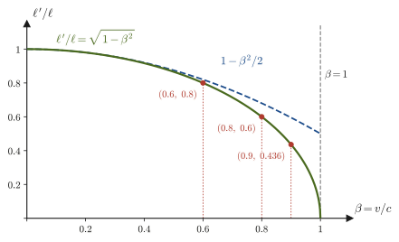
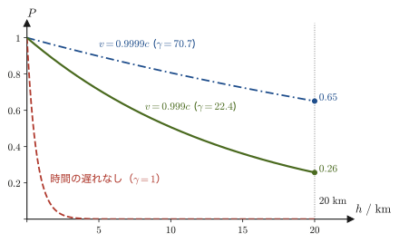
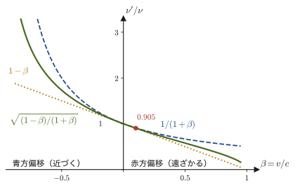
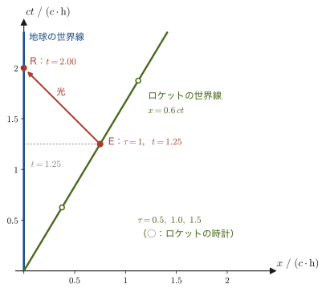
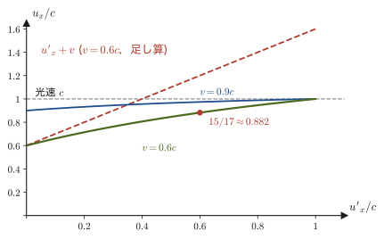

第55章ローレンツ収縮・時間の遅れ・速度の変換
宇宙から降ってくる素粒子ミューオンは，生まれてから約 $2.2\ \mathrm{\mu s}$ で壊れてしまう．光の速さで飛んでも，その間に進める距離はたった $660\ \mathrm{m}$ である．ところが，上空 $15$〜$20\ \mathrm{km}$ で生まれたミューオンは，実際には地上の私たちの体を毎秒何個も通り抜けている．高校物理の「時間は誰にとっても同じように流れ，長さは誰が測っても同じ」という常識では，この事実を説明できない．前章で導いたローレンツ変換をそのまま使うと，動いている時計はゆっくり進み，動いている物差しは進行方向に縮んで見える，という結論が出てくる．この章では，ローレンツ変換の式に具体的な出来事の座標を代入する，という単純な計算だけで，こうした「相対論的効果」を一つずつ導いていく．
高校物理では，音のドップラー効果の公式 $f'=f\,(V-v_{\mathrm{o}})/(V-v_{\mathrm{s}})$ を暗記した人が多いだろう（$v_{\mathrm{s}},v_{\mathrm{o}}$ は，音源から観測者へ向かう向きを正とする速度．第12章 12.1）．光のドップラー効果は，光を伝える媒質がないので，この公式をそのまま使うことができない．本章では，光源の時計の遅れと，波面の間隔の変化の二つを重ねて，光の相対論的ドップラー効果（赤方偏移）の公式を導く．さらに，高校で「速度の合成」として足し算をしていた $v_1+v_2$ が，光速に近いところではどう書き換わるかを，微分の連鎖律を使って導く．最後に，私たちの身近にある応用として，カーナビやスマートフォンの位置情報を支える GPS 衛星の原子時計の補正を，特殊相対論の効果として計算してみる．
- 長さの測定の意味（同時に測った両端の座標の差）と，ローレンツ変換から導かれる長さの収縮 $\ell'=\ell\sqrt{1-(v/c)^2}$
- 光時計とローレンツ変換の 2 通りの方法による時間の遅れ $\Delta t=\gamma\,\Delta\tau$ の導出と，固有時の考え方
- ミューオンの寿命の延びと，同じ現象を「ミューオンの立場」から見たときの大気の収縮（2 つの見方の一致）
- 光の相対論的ドップラー効果 $\nu'=\sqrt{(c-v)/(c+v)}\,\nu$ の導出と赤方偏移・青方偏移
- ロケットの時計を望遠鏡で見る問題（光が届くまでの時間をふくめて考える）
- ローレンツ速度変換 $u'_x=(u_x-v)/(1-vu_x/c^2)$，$u'_y=u_y/[\gamma(1-vu_x/c^2)]$ の導出と，合成された速さが $c$ を超えないこと
- GPS 衛星の時計の補正（特殊相対論で 1 日約 $7\ \mathrm{\mu s}$ 遅れ，一般相対論で約 $45\ \mathrm{\mu s}$ 進み，差し引き約 $38\ \mathrm{\mu s}$ 進む）
もとにしたノート：望月泰英『物理学ノート 特殊相対性理論』 pp. 4–10．
55.1 ローレンツ収縮 — 動いている棒の長さ
高校物理では，物体の長さは物差しを当てて読み取るものだった．動いていない棒なら，どんな人が測っても同じ値になる．しかし，走っている電車の長さは，そう簡単には測れない．電車は測っている間にも動いてしまうからである．電車の長さを測るには，先頭と最後尾の位置を同じ時刻に記録して，その差をとるしかない．そこでまず，「長さを測る」ことの意味をはっきりさせよう．
定義55.1 長さの測定と固有長
ある慣性系で観測される 2 点 A，B の間の距離（長さ）とは，その慣性系の同じ時刻に測った A の座標と B の座標の差である．棒が動いている場合，棒の両端の位置を，その慣性系の同時刻（その系で同期させた時計が示す同じ時刻）で記録する．また，棒が静止している慣性系で測った長さを，その棒の固有長（proper length）という．
棒が静止している場合には，同時に測ろうが違う時刻に測ろうが結果は同じだから，「同時」であることを意識する必要はない．ところが前章のローレンツ変換では，時刻 $t'$ の式に位置 $x$ が混ざっていた（第54章 54.5）．そのため，「S 系での同時」と「S′ 系での同時」が一致しなくなる．これが長さの収縮の原因である．
55.1.1 設定
前章と同じく，慣性系 S と，S に対して $x$ 軸の正の向きに速さ $v$ で動く慣性系 S′ を考える．S 系に対して静止している棒（長さ $\ell$）が $x$ 軸に沿って置かれているとする．棒の一端を A，他端を B とし，S 系での座標を
\begin{equation} x_{\mathrm{A}}=0,\qquad x_{\mathrm{B}}=\ell \label{eq:55-rod-S} \end{equation}とする（図55.1）．棒は S 系で静止しているから，$x_{\mathrm{A}},x_{\mathrm{B}}$ は時刻 $t$ によらない．この棒を，S′ 系から見たときの長さ $\ell'$ を求めたい．使うのは，前章で導いたローレンツ変換（定理54.1）
\begin{equation} x'=\frac{x-vt}{\sqrt{1-(v/c)^2}},\qquad t'=\frac{t-\dfrac{v}{c^2}x}{\sqrt{1-(v/c)^2}},\qquad y'=y,\quad z'=z \label{eq:55-lorentz} \end{equation}だけである．ここで $\gamma=1/\sqrt{1-(v/c)^2}$ と書くと，式 \eqref{eq:55-lorentz} は $x'=\gamma(x-vt)$，$t'=\gamma(t-vx/c^2)$ である．
55.1.2 A 端・B 端の座標を S′ 系に変換する
導出：ローレンツ収縮
A 端の座標．$x_{\mathrm{A}}=0$ を式 \eqref{eq:55-lorentz} に代入する．A が棒の左端で $x_{\mathrm{A}}=0$ であることを使うと，
$$ x_{\mathrm{A}}'=\frac{0-vt_{\mathrm{A}}}{\sqrt{1-(v/c)^2}}=-\gamma\,v\,t_{\mathrm{A}},\qquad t_{\mathrm{A}}'=\frac{t_{\mathrm{A}}-0}{\sqrt{1-(v/c)^2}}=\gamma\,t_{\mathrm{A}} $$となる．2 つ目の式から $t_{\mathrm{A}}=t_{\mathrm{A}}'/\gamma$ なので，これを 1 つ目に代入すると $x_{\mathrm{A}}'=-\gamma v\,(t_{\mathrm{A}}'/\gamma)=-v\,t_{\mathrm{A}}'$，すなわち
\begin{equation} x_{\mathrm{A}}'=-v\,t_{\mathrm{A}}' \label{eq:55-xA} \end{equation}である．これは「S′ 系から見ると，A は速さ $v$ で $-x'$ の向きに動いている」ことを表している（S′ が S に対して $+x$ の向きに動いているのだから当然である）．
B 端の座標．$x_{\mathrm{B}}=\ell$ を式 \eqref{eq:55-lorentz} に代入すると，
$$ x_{\mathrm{B}}'=\frac{\ell-vt_{\mathrm{B}}}{\sqrt{1-(v/c)^2}}=\gamma\,(\ell-vt_{\mathrm{B}}),\qquad t_{\mathrm{B}}'=\frac{t_{\mathrm{B}}-\dfrac{v}{c^2}\ell}{\sqrt{1-(v/c)^2}}=\gamma\left(t_{\mathrm{B}}-\frac{v}{c^2}\ell\right) $$である．A 端では，S′ 系での位置が S′ 系の時刻 $t_{\mathrm{A}}'$ の関数として $x_{\mathrm{A}}'=-v\,t_{\mathrm{A}}'$ と表せた．B 端についても，S′ 系での位置を S′ 系の時刻 $t_{\mathrm{B}}'$ の関数として表したい．そうすれば，S′ 系のある時刻での棒の様子（図55.1(b)）が，A 端と B 端の座標を並べるだけで得られるからである．そのために，$t_{\mathrm{B}}'$ の式を $t_{\mathrm{B}}$ について解く．両辺を $\gamma$ で割って $v\ell/c^2$ を移項すると，
$$ t_{\mathrm{B}}=\frac{t_{\mathrm{B}}'}{\gamma}+\frac{v}{c^2}\,\ell $$となる．これを $x_{\mathrm{B}}'=\gamma\,(\ell-vt_{\mathrm{B}})$ に代入すると，$t_{\mathrm{B}}$ が消えて，
$$ \begin{aligned} x_{\mathrm{B}}'&=\gamma\left[\ell-v\left(\frac{t_{\mathrm{B}}'}{\gamma}+\frac{v}{c^2}\,\ell\right)\right] =\gamma\ell-v\,t_{\mathrm{B}}'-\gamma\frac{v^2}{c^2}\ell\\ &=\gamma\ell\left(1-\frac{v^2}{c^2}\right)-v\,t_{\mathrm{B}}' =\frac{1}{\sqrt{1-(v/c)^2}}\,\ell\left(1-\frac{v^2}{c^2}\right)-v\,t_{\mathrm{B}}' \end{aligned} $$となる（$\gamma\cdot t_{\mathrm{B}}'/\gamma=t_{\mathrm{B}}'$ を使った）．最後の係数は $(1-v^2/c^2)/\sqrt{1-v^2/c^2}=\sqrt{1-v^2/c^2}$ なので，
\begin{equation} x_{\mathrm{B}}'=\sqrt{1-\left(\frac vc\right)^2}\ \ell-v\,t_{\mathrm{B}}' \label{eq:55-xB} \end{equation}が得られる．A 端の式 \eqref{eq:55-xA} と比べると，どちらも「$-v\times$（S′ 系の時刻）」の形で（両端とも速さ $v$ で $-x'$ の向きに動いている），違いは定数項だけである．
「A–B 間の距離」を求める．定義55.1 により，S′ 系での A–B 間の距離は，S′ 系の同じ時刻に測った A と B の座標の差である．すなわち $t_{\mathrm{A}}'=t_{\mathrm{B}}'$ を課した上で，式 \eqref{eq:55-xB} から式 \eqref{eq:55-xA} を引けばよい：
$$ \ell'=x_{\mathrm{B}}'-x_{\mathrm{A}}'=\left[\sqrt{1-\left(\frac vc\right)^2}\ \ell-v\,t_{\mathrm{B}}'\right]-\left[-v\,t_{\mathrm{A}}'\right] =\sqrt{1-\left(\frac vc\right)^2}\ \ell-v\,(t_{\mathrm{B}}'-t_{\mathrm{A}}') $$$t_{\mathrm{A}}'=t_{\mathrm{B}}'$ より最後の項は 0 になり，
\begin{equation} \ell'=x_{\mathrm{B}}'-x_{\mathrm{A}}'=\sqrt{1-\left(\frac vc\right)^2}\ \ell \label{eq:55-contraction} \end{equation}を得る．
（導出終わり）
注意：「S′ 系で同時」と「S 系で同時」は同じではない
上の導出で，$t_{\mathrm{A}}'=t_{\mathrm{B}}'$ という条件は「S′ 系で同時」という意味であって，「S 系で同時」つまり $t_{\mathrm{A}}=t_{\mathrm{B}}$ と同じではない．実際，$t_{\mathrm{A}}'=t_{\mathrm{B}}'$ に上の式 $t_{\mathrm{A}}'=\gamma t_{\mathrm{A}}$，$t_{\mathrm{B}}'=\gamma(t_{\mathrm{B}}-v\ell/c^2)$ を代入すると，$\gamma t_{\mathrm{A}}=\gamma(t_{\mathrm{B}}-v\ell/c^2)$ となり，
$$ t_{\mathrm{B}}-t_{\mathrm{A}}=\frac{v\ell}{c^2}\neq0 $$である．つまり S′ 系が「同時に」A と B を記録したとき，S 系の時計では B の記録のほうが $v\ell/c^2$ だけ後になっている．もし，これを忘れて S 系の同じ時刻 $t_{\mathrm{A}}=t_{\mathrm{B}}$ で座標を引き算すると，$x_{\mathrm{B}}'-x_{\mathrm{A}}'=\gamma(\ell-vt_{\mathrm{B}})+\gamma vt_{\mathrm{A}}=\gamma\ell$ となって，$\ell$ より大きい値が出る．しかしこれは，S′ 系から見ると異なる時刻の A と B（その間にも棒は動いている）の位置の差にすぎず，S′ 系での「棒の長さ」ではない．長さを測るとは同時に測ることだ，という定義55.1に立ち返って考えることが大切である．
定理55.1 ローレンツ収縮（長さの収縮）
ある慣性系 S で静止している棒の固有長を $\ell$ とする．S に対して棒の長さ方向に速さ $v$ で動く慣性系 S′ から測った棒の長さ $\ell'$ は，
\begin{equation} \ell'=\sqrt{1-\left(\frac vc\right)^2}\ \ell=\frac{\ell}{\gamma}\ \ (\le\ell) \label{eq:55-thm-contraction} \end{equation}である．すなわち，棒は S′ 系から見ると運動方向に $\sqrt{1-(v/c)^2}$ 倍に縮んで見える．棒の長さは，棒が静止している系で測ったとき（固有長）が最も長い．
イメージ：縮むのは運動方向だけ，そして「お互いさま」
ローレンツ変換では $y'=y$，$z'=z$ だから（第54章 54.5.3），縮むのは運動方向（$x$ 方向）の長さだけで，運動方向に垂直な方向の長さは変わらない．たとえば S 系で半径 $R$ の球は，S′ 系では $x'$ 方向の直径だけが $\sqrt{1-(v/c)^2}$ 倍に縮んだ，つぶれた回転楕円体になる．また，前章の相対性原理により S と S′ は対等だから，S′ 系に静止した棒を S 系から見ても，同じ割合で縮んで見える（例題55.2）．どちらか一方が「本当に縮んでいる」のではなく，「長さ」とは，その慣性系での同時刻に測った量だ，という定義から出てくる相対的な量なのである．
注意：「測った長さ」と「目に見える形」は別のもの
定理55.1 は，運動する物体の両端を同時に記録して得られる長さの話である．目や写真に映る「見た目」は別問題で，物体の各部分から出た光がカメラに同時に届くためには，遠い部分ほど早く光を出さなければならず，光が届くまでの時間差が効いてくる．その結果，光速に近い速さで動く球は，つぶれた楕円体ではなく，写真では円形（球）のまま，立方体はゆがんで回転したように写ることが，テレル（Terrell）とペンローズ（Penrose）によって 1959 年に示された．ローレンツ収縮は，「見える」現象ではなく，同時刻の座標の差として「測定される」現象である．
縮み方の割合 $\ell'/\ell=\sqrt{1-\beta^2}$ を $\beta=v/c$ の関数として描くと，図55.2 のようになる．$\beta$ が小さいうちはほとんど縮まず，$\beta$ が 1 に近づくと急に縮んで，$\beta\to1$ で長さは 0 に近づく．

例題55.1 光速の 0.9 倍で通り過ぎる構造物の長さ
$v=0.9c$ で飛行する宇宙船の中に，宇宙船に対して静止した長さ（固有長）$100\ \mathrm{m}$ の構造物が，進行方向に沿って置かれている．地上（S 系）から見て，この構造物の長さは何 $\mathrm{m}$ に縮んで見えるか．
解答 $\beta=v/c=0.9$ より $\beta^2=0.81$，$1-\beta^2=0.19$ である．定理55.1（式 \eqref{eq:55-thm-contraction}）より，
$$ \ell'=\ell\sqrt{1-\beta^2}=100\ \mathrm{m}\times\sqrt{0.19}=100\ \mathrm{m}\times0.4359\approx43.6\ \mathrm{m} $$（$\gamma=1/\sqrt{0.19}=2.294$ で，$\ell/\gamma=100/2.294=43.6\ \mathrm{m}$ とも一致する）．約 $44\ \mathrm{m}$，つまり半分より少し短く見える．運動方向に垂直な方向（構造物の幅や高さ）は変わらない．
例題55.2 S′ 系に静止した棒を S 系で測る（収縮は「お互いさま」）
S′ 系に対して静止した棒の固有長を $\ell_0$ とする．棒は S′ 系の $x'$ 軸に沿って置かれ，一端 A′ が $x'=0$，他端 B′ が $x'=\ell_0$ にある．この棒の S 系での長さ $\ell$ を，逆ローレンツ変換 $x=\gamma(x'+vt')$，$t=\gamma(t'+vx'/c^2)$（前章 54.7 節）を使って求めよ．
解答 A′ の座標 $x_{\mathrm{A}}'=0$ を代入すると，$x_{\mathrm{A}}=\gamma\,v\,t_{\mathrm{A}}'$，$t_{\mathrm{A}}=\gamma\,t_{\mathrm{A}}'$．B′ の座標 $x_{\mathrm{B}}'=\ell_0$ を代入すると，
$$ x_{\mathrm{B}}=\gamma\,(\ell_0+v\,t_{\mathrm{B}}'),\qquad t_{\mathrm{B}}=\gamma\left(t_{\mathrm{B}}'+\frac{v}{c^2}\ell_0\right) $$である．S 系での長さは，S 系の同じ時刻 $t_{\mathrm{A}}=t_{\mathrm{B}}$ に測った座標の差である．$\gamma t_{\mathrm{A}}'=\gamma(t_{\mathrm{B}}'+v\ell_0/c^2)$ より，$t_{\mathrm{A}}'-t_{\mathrm{B}}'=v\ell_0/c^2$．よって
$$ \ell=x_{\mathrm{B}}-x_{\mathrm{A}}=\gamma\,\bigl[\ell_0+v\,(t_{\mathrm{B}}'-t_{\mathrm{A}}')\bigr]=\gamma\left[\ell_0-\frac{v^2}{c^2}\ell_0\right]=\gamma\,\ell_0\,(1-\beta^2)=\frac{\ell_0}{\gamma}=\sqrt{1-\left(\frac vc\right)^2}\ \ell_0 $$となる（最後は $\gamma(1-\beta^2)=1/\gamma$）．したがって，S 系から見ても S′ 系の棒は同じ割合 $\sqrt{1-(v/c)^2}$ 倍に縮んで見える．S 系の棒を S′ 系から見る場合（式 \eqref{eq:55-contraction}）と，形はまったく同じである．
例題55.3 新幹線の長さはどれだけ縮んでいるか
時速 $300\ \mathrm{km}$ で走る全長 $400\ \mathrm{m}$（固有長）の新幹線を，地上の人が見るとき，ローレンツ収縮で何 $\mathrm{m}$ 縮んでいるか．$c=2.998\times10^8\ \mathrm{m/s}$ とし，原子の大きさ（約 $10^{-10}\ \mathrm{m}$）と比べよ．
解答 $v=300\ \mathrm{km/h}=300\times10^3/3600=83.3\ \mathrm{m/s}$ なので，$\beta=83.3/(2.998\times10^8)=2.78\times10^{-7}$ である．この値は 1 よりずっと小さいので，$\gamma^{-1}=\sqrt{1-\beta^2}$ を，テイラー展開（大学数学 第4章 4.2）の $\sqrt{1-x}\approx1-x/2$ で近似する．$\beta^2=7.72\times10^{-14}$ なので，
$$ \ell'=\ell\sqrt{1-\beta^2}\approx\ell\left(1-\frac{\beta^2}{2}\right),\qquad \ell-\ell'\approx\ell\,\frac{\beta^2}{2}=400\ \mathrm{m}\times\frac{7.72\times10^{-14}}{2}=1.5\times10^{-11}\ \mathrm{m} $$である．縮みは約 $0.015\ \mathrm{nm}$（$15\ \mathrm{pm}$）で，原子 1 個の大きさの約 $1/7$ にすぎない．日常の速さでローレンツ収縮に気づかないのは，$\beta$ が非常に小さく，縮みが $\beta^2$ に比例するためである．
55.2 時計の遅れ — 固有時と時間の伸び
前節では，ローレンツ変換の「$x'$ の式」から，長さの収縮を導いた．こんどは「$t'$ の式」から，時間の進み方が座標系によって違うことを導こう．時計とは，振り子の往復，水晶の振動，セシウム原子の光の振動など，周期的な現象を数えることで時間を測る装置である．したがって「動いている時計の進み方」を調べることは，「動いている系での周期的な現象の周期」を調べることにほかならない．
定義55.2 固有時
ある時計が静止している慣性系（その時計から見て，時計は同じ場所にある）で，その時計自身が測った時間間隔 $\Delta\tau$ を，その時計の固有時（proper time）という．同じ場所で起こる 2 つの出来事（たとえば時計の 2 回の「カチッ」）の時間間隔は，それらが同じ場所で起こる座標系で測った時間間隔が固有時になる．
「固有長」（定義55.1）が，物体が静止している系での長さだったのと対応している．時間についての結論は，「固有時が最も短い」ということになる．以下では，これを 2 通りの方法で導く．1 つ目は，光時計という思考実験を使い，ローレンツ変換の式そのものは使わずに導く方法である（使うのは，光速度不変の原理，ピタゴラスの定理，そして運動方向に垂直な長さは変わらないこと（第54章 54.5.3 の「なぜ？」の箱）だけである）．2 つ目は，ローレンツ変換の式を直接使う方法である．
55.2.1 光時計による導出
光時計（light clock）とは，距離 $d$ だけ離した 2 枚の鏡の間で光を往復させ，往復のたびに 1 回「カチッ」と数える仮想的な時計である．この時計が静止している座標系（座標系 S とする）では，光は鏡の間を速さ $c$ で行き来するので，1 往復にかかる時間，すなわち固有時の間隔は
\begin{equation} \Delta\tau=\frac{2d}{c} \label{eq:55-lc-rest} \end{equation}である（図55.3(a)）．たとえば $d=0.15\ \mathrm{m}$ なら，$\Delta\tau=2\times0.15/(3.0\times10^{8})=1.0\times10^{-9}\ \mathrm{s}=1\ \mathrm{ns}$ である．
この時計を，S に対して $+x$ 方向に速さ $v$ で動く座標系 S′ から観測する．S′ 系から見ると，時計は $-x'$ の向き（図の左向き）に速さ $v$ で動いて見える．鏡は運動方向に対して垂直に置かれているとする（したがって鏡の間隔 $d$ は，前章の $y'=y$ より S′ 系でも同じ $d$ である）．S′ 系の時計で測った光の 1 往復の時間を $T$ とすると，この間に光時計は S′ 系で $vT$ だけ動く（図55.3(b)）．光は下の鏡を出てから上の鏡に着くまでに（時間 $T/2$），時計と一緒に水平（$-x'$ の向き）に $vT/2$ 動きつつ，垂直に $d$ 進む．光の速さは，S′ 系でも同じ $c$ である（光速度不変の原理，法則54.3）から，斜めに進んだ距離は $c\cdot T/2$ である．図の直角三角形にピタゴラスの定理を使うと，
\begin{equation} \left(\frac{cT}{2}\right)^2=d^2+\left(\frac{vT}{2}\right)^2 \label{eq:55-lc-pyth} \end{equation}である．これを $T$ について解こう．右辺の $(vT/2)^2$ を左辺に移して整理すると，
$$ \frac{c^2T^2}{4}-\frac{v^2T^2}{4}=d^2 \qquad\Longrightarrow\qquad \frac{T^2}{4}\,(c^2-v^2)=d^2 \qquad\Longrightarrow\qquad T=\frac{2d}{\sqrt{c^2-v^2}} $$となる．分母の $c$ をくくり出して $\sqrt{c^2-v^2}=c\sqrt{1-v^2/c^2}$ と書き，式 \eqref{eq:55-lc-rest} を使うと，
\begin{equation} T=\frac{2d}{c}\cdot\frac{1}{\sqrt{1-(v/c)^2}}=\frac{\Delta\tau}{\sqrt{1-(v/c)^2}}=\gamma\,\Delta\tau \label{eq:55-lc-result} \end{equation}を得る．$\gamma\ge1$ なので，動いて見える時計の 1 往復は，静止している時計の 1 往復より $\gamma$ 倍だけ長い．つまり，動いている時計は遅れる．ここで使ったのは光速度不変の原理とピタゴラスの定理（と，鏡の間隔 $d$ が S′ 系でも変わらないこと）だけであり，光がどんな速さで進むかが観測者によらない，という原理から時間の遅れが出てきたことに注目しよう．
イメージ：光は「斜めに長い道のり」を同じ速さで走る
動いて見える光時計の中の光は，静止しているときの真上・真下の道のりよりも，斜めに進む分だけ長い道のりを走らなければならない．ところが光の速さは変わらないので，道のりが長い分だけ，往復にかかる時間が長くなる．これが時間の遅れの直観的な理由である．動く電車の中で投げたボールなら，地上から見たボールの速さが電車の速さの分だけ大きくなるので，道のりが長くなっても時間は変わらずにすむ．しかし光の速さは観測者によらず一定なので，道のりが長くなった分は，かわりに時間が伸びることで調整されるのである．
55.2.2 ローレンツ変換による導出
同じことを，ローレンツ変換から導こう．S 系の原点 $x=0$ に置かれた時計を考える．この時計は S 系に対して静止していて，S 系で 2 回のカチッ（時刻 $t_1$ と $t_2$，位置はどちらも $x=0$）を刻むとする．S 系で測った間隔 $\Delta t=t_2-t_1$ は，この時計の固有時 $\Delta\tau$ である．
導出：動いている時計は遅れる
2 つの出来事の S′ 系での時刻は，ローレンツ変換（式 \eqref{eq:55-lorentz}）の $t'$ の式に $x=0$ を代入して，
$$ t_1'=\frac{t_1-\dfrac{v}{c^2}\cdot0}{\sqrt{1-(v/c)^2}}=\frac{t_1}{\sqrt{1-(v/c)^2}},\qquad t_2'=\frac{t_2}{\sqrt{1-(v/c)^2}} $$である（$x=0$ を代入して，$x$ に比例する項が消えたことが要点である）．したがって，S′ 系で測った 2 つの出来事の時間間隔は
\begin{equation} \Delta t'=t_2'-t_1'=\frac{t_2-t_1}{\sqrt{1-(v/c)^2}}=\frac{\Delta t}{\sqrt{1-(v/c)^2}}=\gamma\,\Delta t \label{eq:55-td-derivation} \end{equation}となる．$\Delta t$ は S 系での固有時 $\Delta\tau$ だから，$\Delta t'=\gamma\,\Delta\tau$ である．これは光時計から得た式 \eqref{eq:55-lc-result} と一致する．
（導出終わり）
定理55.2 時間の遅れ
ある時計が静止している慣性系で，その時計が測る時間間隔（固有時）を $\Delta\tau$ とする．この時計に対して速さ $v$ で動く慣性系で測った，同じ 2 つの出来事の時間間隔 $\Delta t$ は，
\begin{equation} \Delta t=\frac{\Delta\tau}{\sqrt{1-(v/c)^2}}=\gamma\,\Delta\tau\ \ (\ge\Delta\tau) \label{eq:55-thm-dilation} \end{equation}である．すなわち，動いている時計は，静止している時計より $\sqrt{1-(v/c)^2}$ 倍だけゆっくり進む．
考察：お互いに「相手の時計が遅れている」と言えるのはなぜか
S′ 系に静止している時計について，逆ローレンツ変換 $t=\gamma(t'+vx'/c^2)$ を同じように使うと（時計は S′ 系の $x'=0$ にあるとする），S 系で測った間隔は $\Delta t=\gamma\,\Delta t'$ になる．つまり S から見れば S′ の時計が遅れ，S′ から見れば S の時計が遅れる．相対性原理により S と S′ は対等なのだから，これは当然であるが，一見矛盾しているように見える．矛盾しないのは，「動いている時計の 2 回のカチッ」は異なる場所で起こる出来事であり，その時間間隔を相手の系で測るには，異なる場所に置いた（そして，その系の中で同期させた）2 つの時計が必要になるからである．前節で見たとおり，S 系で同時に見える 2 つの場所の時計は，S′ 系では同時に見えない．こうして，相手の系を測る時計の組と，自分の時計を比べているので，お互いに相手が遅れて見えるという結論が矛盾なく成り立つ．具体的な数値で確かめるのが例題55.7である．同時性の相対性と時空図は，第56章で詳しく調べる．
注意：$\Delta t=\gamma\Delta\tau$ は「同じ場所で起こる 2 つの出来事」に対してだけ成り立つ
式 \eqref{eq:55-thm-dilation} を導いたときは，2 つの出来事が S 系の同じ場所（$x=0$）で起こる，と仮定した．一般に，S 系で 2 つの出来事の時間差が $\Delta t$，位置の差が $\Delta x$ のとき，ローレンツ変換（式 \eqref{eq:55-lorentz}）から S′ 系での時間差は
$$ \Delta t'=\gamma\left(\Delta t-\frac{v}{c^2}\Delta x\right) $$である．$\Delta x=0$ の場合にだけ $\Delta t'=\gamma\Delta t$ となる．「動いている時計は $\gamma$ 倍ゆっくり進む」という公式を使うときには，2 つの出来事が時計のその時計が静止している系で同じ場所で起こっているか（つまり時間間隔が固有時か）を，必ず確かめよう．
応用：時間の遅れは実験で確かめられている
時間の遅れは，多くの実験で確認されている．次節で見るように，宇宙線のミューオンが地上に届くのは時間の遅れのためである．1977 年に CERN で行われた実験（muon storage ring）では，磁場中の円軌道に閉じ込めたミューオンが，ローレンツ因子 $\gamma\approx29.3$ で運動しているときの寿命を測り，静止しているミューオンの寿命の $\gamma$ 倍（約 $64\ \mathrm{\mu s}$）に延びることを，$0.1\%$ 程度の精度で確認した．また，イオンにレーザー光を当てる精密な光時計を使うと，秒速 $10\ \mathrm{m}$ 程度（時速 $36\ \mathrm{km}$ 程度）以下という，ゆっくりした運動による時計の遅れさえ検出でき，高さがわずか $33\ \mathrm{cm}$ 違うだけで生じる重力の効果も検出できることが，2010 年に示されている．さらに，カーナビゲーションなどに使う衛星測位システム（GPS）では，時間の遅れの補正が，実際に毎日の位置決定に組み込まれている（55.7節）．
例題55.4 0.99c で飛ぶ宇宙船の 1 時間
地上で 1 時間（$3600\ \mathrm{s}$）が経過する間に，$v=0.99c$ で飛行する宇宙船に乗っている人の時計は，何分進むか．
解答 地上の 1 時間は，地上の時計で測った時間間隔 $\Delta t=3600\ \mathrm{s}$ である．宇宙船の時計は，宇宙船の中の同じ場所で起こる出来事を測るので，宇宙船の時計が刻む時間 $\Delta\tau$ は固有時である．定理55.2 より $\Delta t=\gamma\Delta\tau$，すなわち $\Delta\tau=\Delta t/\gamma=\Delta t\sqrt{1-\beta^2}$ である．$\beta=0.99$ のとき $\beta^2=0.9801$，$1-\beta^2=0.0199$，$\sqrt{0.0199}=0.14107$（$\gamma=7.0888$）なので，
$$ \Delta\tau=3600\ \mathrm{s}\times0.14107=507.8\ \mathrm{s}\approx8.46\ \mathrm{分} $$である．地上の 1 時間のあいだに，宇宙船の時計は約 $8.5$ 分しか進まない．
例題55.5 光時計の周期
鏡の間隔 $d=0.15\ \mathrm{m}$ の光時計がある．(a) 静止しているときの周期（固有時）$\Delta\tau$ を求めよ．(b) この時計が鏡の面に平行な向きに $v=0.6c$ で動いて見えるとき，周期 $T$ と，その間に光の進む道のり $cT$ を求めよ．$c=3.00\times10^8\ \mathrm{m/s}$ とする．
解答 (a) $\Delta\tau=2d/c=2\times0.15\ \mathrm m/(3.00\times10^8\ \mathrm{m/s})=1.00\times10^{-9}\ \mathrm{s}=1.00\ \mathrm{ns}$．(b) $\beta=0.6$ のとき $\gamma=1/\sqrt{1-0.36}=1/0.8=1.25$ だから，式 \eqref{eq:55-lc-result} より $T=\gamma\,\Delta\tau=1.25\ \mathrm{ns}$ である．光の道のりは $cT=3.00\times10^8\times1.25\times10^{-9}=0.375\ \mathrm m$ で，静止時の往復の道のり $2d=0.30\ \mathrm m$ より長い．念のため式 \eqref{eq:55-lc-pyth} で確かめると，片道は $cT/2=0.1875\ \mathrm m$，時計の移動は $vT/2=0.6\times0.1875=0.1125\ \mathrm m$，垂直距離は $d=0.15\ \mathrm m$ で，$0.15^2+0.1125^2=0.0225+0.012656=0.035156$，$0.1875^2=0.035156$ となり，ピタゴラスの定理を満たしている．
例題55.6 長さの収縮と時間の遅れが両立していることの確認
固有長 $\ell_0=100\ \mathrm m$ の宇宙船が，地上の観測点 P（地上に固定）の横を，速さ $v=0.6c$ で通過する．宇宙船の先頭が P を通過してから，最後尾が P を通過するまでの時間を，(a) 地上の時計，(b) 宇宙船の時計で測ると，それぞれ何 $\mathrm{s}$ か．(c) (a) と (b) が時間の遅れの式（定理55.2）を満たしていることを確かめよ．$c=3.00\times10^8\ \mathrm{m/s}$ とする．
解答 $\gamma=1.25$ である．(a) 地上から見ると，宇宙船の長さはローレンツ収縮で $\ell=\ell_0/\gamma=100/1.25=80\ \mathrm m$ である．これが速さ $v=0.6c=1.80\times10^8\ \mathrm{m/s}$ で観測点 P を通り過ぎるので，通過に要する時間は
$$ \Delta t_{\mathrm{G}}=\frac{\ell}{v}=\frac{80\ \mathrm m}{1.80\times10^8\ \mathrm{m/s}}=4.44\times10^{-7}\ \mathrm s $$である．(b) 宇宙船から見ると，長さ $\ell_0=100\ \mathrm m$ の宇宙船は静止していて，観測点 P が速さ $v$ で通り過ぎる．先頭から最後尾までの道のりは $100\ \mathrm m$ なので，
$$ \Delta t_{\mathrm{S}}=\frac{\ell_0}{v}=\frac{100\ \mathrm m}{1.80\times10^8\ \mathrm{m/s}}=5.56\times10^{-7}\ \mathrm s $$である．(c) 「先頭が P を通過」と「最後尾が P を通過」は，地上では同じ場所（P）で起こる 2 つの出来事だから，地上の時計（P に置いた 1 つの時計）が測る $\Delta t_{\mathrm{G}}$ が固有時である．定理55.2 より，宇宙船から見た時間間隔は $\Delta t_{\mathrm{S}}=\gamma\,\Delta t_{\mathrm{G}}=1.25\times4.44\times10^{-7}=5.56\times10^{-7}\ \mathrm s$ となり，(b) の値と一致する．長さの収縮（前節）と時間の遅れは，別々の現象ではなく，同じローレンツ変換から出てくる 1 つの理論の 2 つの現れ方であり，たがいに矛盾しない．
例題55.7 「お互いに相手の時計が遅れて見える」ことの数値による確認
S 系に，S 系で同期させた 2 つの時計 C1（$x=0$）と C2（$x=L=180\ \mathrm m$）が置かれている．S′ 系の時計 K が S′ 系の原点にあり，S に対して $+x$ の向きに $v=0.6c$（$\gamma=1.25$）で動いている．K が C1 のそばを通る瞬間，K と C1 はともに $0$ を示した．(a) S 系の立場で，K が C2 に並ぶ瞬間の C2 と K の読みを求め，「K が遅れている」ことを確かめよ．(b) S′ 系の立場で，K が C1 と並ぶ瞬間（$t'=0$）に C2 が示している値を求めよ．(c) S′ 系の立場で，K が C2 と並ぶまでのあいだに，K の読みと C2 の読みがそれぞれどれだけ進むかを求め，「S 系の時計が遅れている」ことを確かめよ．$c=3.00\times10^{8}\ \mathrm{m/s}$ とする．
解答 $v=0.6c=1.80\times10^{8}\ \mathrm{m/s}$，$L/c=180/(3.00\times10^{8})=0.600\ \mathrm{\mu s}$ である．
(a) S 系では，K が C1 から C2 まで距離 $L$ を進むのにかかる時間は $t=L/v=180\ \mathrm m/(1.80\times10^{8}\ \mathrm{m/s})=1.00\ \mathrm{\mu s}$ である．C1，C2 は S 系で同期しているので，K が C2 に並ぶ瞬間に C2 は $1.00\ \mathrm{\mu s}$ を示している．一方，K は動いている時計なので，S 系の時間 $1.00\ \mathrm{\mu s}$ のあいだに K の固有時は $1.00/\gamma=1.00/1.25=0.800\ \mathrm{\mu s}$ しか進まず，K は $0.800\ \mathrm{\mu s}$ を示す．C2 が $1.00\ \mathrm{\mu s}$，K が $0.800\ \mathrm{\mu s}$ だから，S 系から見て K が遅れている．
(b) K が C1 と並ぶ出来事は S′ 系の $t'=0$ で起こる．S′ 系の同じ時刻 $t'=0$ に C2 が示している値 $t_{\mathrm{C2}}$ は，C2 の位置 $x=L$ で $t'=\gamma\,(t-vL/c^2)=0$ となる S 系の時刻 $t$ である．よって
$$ t_{\mathrm{C2}}=\frac{v}{c^2}L=\beta\,\frac{L}{c}=0.6\times0.600\ \mathrm{\mu s}=0.360\ \mathrm{\mu s} $$である．S′ 系から見ると，$t'=0$ に C1 は $0$ を，C2 は $0.360\ \mathrm{\mu s}$ を示している．S 系で同期している 2 つの時計は，S′ 系から見ると同期しておらず，S 系の時計が動いていく向き（$-x'$ の向き）の後ろにある C2 のほうが，$vL/c^2$ だけ進んでいる（この位置 $x'$ は，逆ローレンツ変換 $t=\gamma(t'+vx'/c^2)$ に $t'=0$，$x'=L/\gamma=144\ \mathrm m$ を入れても $t=1.25\times0.6\times144/(3.00\times10^{8})=0.360\ \mathrm{\mu s}$ となり，一致する）．
(c) S′ 系では，$t'=0$ に C2 は K から距離 $L/\gamma=180/1.25=144\ \mathrm m$ の位置にあり（S′ 系では C1–C2 間の距離が収縮している），速さ $v$ で K に近づく．K に並ぶのは $t'=144\ \mathrm m/(1.80\times10^{8}\ \mathrm{m/s})=0.800\ \mathrm{\mu s}$ である．K は S′ 系で静止しているので，この間に K の読みは $0$ から $0.800\ \mathrm{\mu s}$ まで進む（(a) の値と同じである）．C2 は S′ 系で動いているので，S′ 系の時間 $0.800\ \mathrm{\mu s}$ のあいだに $0.800/\gamma=0.640\ \mathrm{\mu s}$ しか進まず，読みは $0.360\ \mathrm{\mu s}$ から $0.360+0.640=1.000\ \mathrm{\mu s}$ になる．これは (a) で求めた，K に並んだ瞬間の C2 の読み $1.00\ \mathrm{\mu s}$ と一致する．S′ 系の時間で見ると，K が $0.800\ \mathrm{\mu s}$ 進むあいだに C2 は $0.640\ \mathrm{\mu s}$ しか進まないから，S′ 系から見て S 系の時計が遅れている．
(a) と (c) の結論は逆向きだが，矛盾しない．(a) では，K という 1 つの時計の進みを，S 系の同期した 2 つの時計 C1，C2 で測っている．(c) では，C2 という 1 つの時計の進みを，S′ 系の同期した 2 つの時計（$x'=144\ \mathrm m$ にある時計と K）で測っている．比べている時計の組が違い，しかも「相手の系の 2 つの時計は，自分の系から見ると同期していない」（(b) で見た $0.360\ \mathrm{\mu s}$ のずれ）ので，お互いに相手が遅れて見えるのである．
55.3 ミューオン（μ 中間子）の相対論的効果
時間の遅れが決定的な役割を演じる身近な例が，宇宙線として地上に降り注いでいるミューオン（muon，記号 $\mu$）である．ミューオンは，電子と同じ電荷をもち，質量が電子の約 $207$ 倍（$105.658\ \mathrm{MeV}/c^2$）の素粒子である（かつては「μ 中間子」と呼ばれたが，現在の分類では，クォークでできた中間子ではなく，電子の仲間の粒子とされる）．宇宙から飛んでくる高エネルギーの粒子（宇宙線，大部分は陽子）が，上空 $15$〜$20\ \mathrm{km}$ の大気の原子核と衝突すると，多数の粒子が生まれ，その崩壊によってミューオンが作られる．観測によると，地表には，このミューオンが絶え間なく降り注いでいる．おおよそ，$1\ \mathrm{cm}^2$ あたり毎分 1 個という頻度である．
ところが，ミューオンは不安定な粒子で，静止しているとき，生まれてから平均で $T_\mu=2.197\ \mathrm{\mu s}\approx2.2\times10^{-6}\ \mathrm s$ で電子と 2 個のニュートリノに崩壊してしまう（この $T_\mu$ を平均寿命という．時刻 $t$ まで生き残っている割合は $\exp(-t/T_\mu)$ で表される．高校で習う半減期 $T_{1/2}$ を使うと，残る割合は $(1/2)^{t/T_{1/2}}=\exp(-t\ln2/T_{1/2})$ なので，$T_\mu=T_{1/2}/\ln2$，すなわち $T_{1/2}=T_\mu\ln2=1.52\ \mathrm{\mu s}$ である．平均寿命は半減期の約 $1.44$ 倍になる）．ミューオンが，仮に光の速さ $c$ で飛んだとしても，寿命の間に進める距離は，$c=3.0\times10^8\ \mathrm{m/s}$ として
\begin{equation} cT_\mu=3.0\times10^{8}\ \mathrm{m/s}\times2.2\times10^{-6}\ \mathrm s=6.6\times10^{2}\ \mathrm m \label{eq:55-cT} \end{equation}にすぎない（以下の精密な計算では，より正確な値 $c=2.998\times10^{8}\ \mathrm{m/s}$，$T_\mu=2.197\ \mathrm{\mu s}$ を使い，$cT_\mu=658.7\ \mathrm m$ とする）．つまり，相対論的効果（時間の遅れ）を無視すると，上空 $20\ \mathrm{km}$ で生まれたミューオンは，地上に届く前にほとんどすべて崩壊してしまうはずである（生き残る割合は，$\exp(-20000/658.7)\approx6.5\times10^{-14}$ となり，事実上ゼロである）．それにもかかわらず，地上でミューオンが観測されるのはなぜか．これを，ローレンツ変換で計算しよう．
55.3.1 地上から見たミューオンの寿命と飛行距離
例55.1 ミューオンの速度を $v=0.999c$ としたときの寿命と飛行距離
ミューオンの速度を $v=0.999\,c$ として，地上から見たミューオンの寿命 $T_\mu'$ と，その間に進む距離 $L$ を計算せよ．（静止したミューオンの平均寿命は $T_\mu=2.197\times10^{-6}\ \mathrm s$ とする．）
座標系の設定．地上に固定した座標系（静止系）を S，ミューオンと一緒に $+x$ 方向に速さ $v$ で動く座標系を S′ とする（図55.4）．ミューオンは S′ 系の原点に静止している．ミューオンが生まれた出来事を，どちらの系でも原点・時刻 0 とし，崩壊した出来事を S′ 系の時刻 $t'=T_\mu$ とする．S′ 系ではミューオンが動かないので，どの時刻でも $x'=0$ である．
解答 S 系から見た座標を求めるので，S′ から S への逆ローレンツ変換（前章 54.7 節，$v\to-v$ にする）
\begin{equation} x=\frac{x'+vt'}{\sqrt{1-(v/c)^2}},\qquad t=\frac{t'+\dfrac{vx'}{c^2}}{\sqrt{1-(v/c)^2}} \label{eq:55-muon-inv} \end{equation}を使う．まず，生まれた出来事（$x'=0$，$t'=0$）を代入すると，
$$ x(0)=\frac{x'(0)+0}{\sqrt{1-(v/c)^2}}=\frac{0+0}{\sqrt{1-(v/c)^2}}=0,\qquad t(0)=\frac{0+\dfrac{v}{c^2}x'(0)}{\sqrt{1-(v/c)^2}}=\frac{0+0}{\sqrt{1-(v/c)^2}}=0 $$となり，S 系でも原点・時刻 0 になる（最初にそろえておいた条件と一致している）．次に，崩壊した出来事（$x'=0$，$t'=T_\mu$）を代入する．ミューオンは S′ 系で動かないので $x'(T_\mu)=0$ である：
$$ x(T_\mu)=\frac{0+vT_\mu}{\sqrt{1-(v/c)^2}}=\frac{0.999\,c\,T_\mu}{\sqrt{1-(0.999)^2}},\qquad t(T_\mu)=\frac{T_\mu+\dfrac{v}{c^2}\cdot0}{\sqrt{1-(v/c)^2}}=\frac{T_\mu}{\sqrt{1-(0.999)^2}} $$ここで $\sqrt{1-(0.999)^2}=\sqrt{1-0.998001}=\sqrt{0.001999}=0.044710$（$\gamma=22.366$）．したがって，地上から見たミューオンの寿命は，S 系の時刻 $t(T_\mu)$ であり，
$$ T_\mu'=t(T_\mu)=\gamma\,T_\mu=22.366\times2.197\times10^{-6}\ \mathrm s=4.91\times10^{-5}\ \mathrm s $$となる（$T_\mu=2.2\times10^{-6}\ \mathrm s$ と丸めると $4.92\times10^{-5}\ \mathrm s$）．その間に進む距離 $L$ は，S 系での崩壊位置 $x(T_\mu)$ で，
$$ L=x(T_\mu)=\gamma\,vT_\mu=0.999\times(2.998\times10^{8}\ \mathrm{m/s})\times4.91\times10^{-5}\ \mathrm s=1.47\times10^{4}\ \mathrm m=14.7\ \mathrm{km} $$である．これは相対論を無視した距離 $cT_\mu=6.6\times10^{2}\ \mathrm m$ の約 $22$ 倍である．検算として，$L=v\,T_\mu'$（S 系で見れば，ミューオンは速さ $v$ で時間 $T_\mu'$ の間まっすぐ進む）と同じ値になっている．
この平均の飛行距離 $14.7\ \mathrm{km}$ は，ミューオンが生まれる高度 $15$〜$20\ \mathrm{km}$ とほぼ同じ大きさなので，かなりの割合が地上まで届く（相対論を無視すると $660\ \mathrm m$ しか飛べず，ほとんど届かない）．実際に届く割合は，例題55.8 で計算する．
注意：S′ 系の座標 $x'$ を取り違えない
この問題では，ミューオンは S′ 系の原点に静止しているので，S′ 系での座標は，生まれた瞬間だけでなく崩壊した瞬間も $x'=0$ である．ミューオンが（S 系で）光速に近い速さで飛んでいるので，崩壊した位置の $x'$ にも「$cT_\mu$ 程度の距離」が入るような気がするかもしれないが，S′ 系ではミューオンはまったく動かない．逆ローレンツ変換の式 \eqref{eq:55-muon-inv} に入れるのは，あくまで S′ 系での 2 つの出来事の座標 $(x',t')$ であり，S 系から見た飛行距離ではない．S′ 系の $x'$ に飛行距離を入れてしまうと，同じ距離を二重に数えることになり，答えが実際より大きくずれる．
考察：ミューオンの立場から見ると，何が起こっているのか
同じ現象を，ミューオンと一緒に動く座標系 S′ から見てみよう．S′ 系では，ミューオンは静止していて，寿命は $T_\mu=2.197\ \mathrm{\mu s}$ のままである．かわりに，大気と地面が速さ $v=0.999c$ でミューオンに向かって突っ込んでくる．すると，S 系で $20\ \mathrm{km}$ の厚さをもつ大気は，運動方向にローレンツ収縮して（定理55.1）
$$ 20\ \mathrm{km}\times\sqrt{1-(0.999)^2}=\frac{20\ \mathrm{km}}{22.37}=0.894\ \mathrm{km}=894\ \mathrm m $$の厚さに縮んで見える．地面がミューオンに到達するまでの時間は，S′ 系で，
$$ \frac{894\ \mathrm m}{0.999\times2.998\times10^{8}\ \mathrm{m/s}}=2.99\times10^{-6}\ \mathrm s=2.99\ \mathrm{\mu s} $$である．これは寿命 $T_\mu=2.197\ \mathrm{\mu s}$ と同程度の長さなので，ミューオンが崩壊せずに地面に届くことは，十分にありうる．こうして，地上から見た「時間の遅れ（寿命が $\gamma$ 倍に延びる）」と，ミューオンから見た「長さの収縮（大気が $1/\gamma$ に縮む）」は，同じ現象の 2 通りの説明であり，どちらの立場で計算しても，ミューオンが地上に届く割合は同じ値になる（例題55.8）．
例題55.8 ミューオンが地上に届く割合（2 つの見方の一致）
上空 $h=20\ \mathrm{km}$ で生まれたミューオンが，速さ (i) $v=0.999c$，(ii) $v=0.9999c$ で地上へ向かって真っすぐ降りるとき，崩壊せずに地上に届く割合を求めよ．また，(i) について，ミューオンから見た計算（大気の収縮）でも同じ割合になることを確かめよ．$T_\mu=2.197\ \mathrm{\mu s}$，$c=2.998\times10^8\ \mathrm{m/s}$ とする．
解答 時刻 $t$ まで生き残る割合は $\exp(-t/T_\mu)$ である（平均寿命の定義）．地上から見ると，ミューオンの時計は $\gamma$ 倍ゆっくり進むので，地上系の時間 $t$ の間に，固有時 $t/\gamma$ が経過する．降下にかかる地上系での時間は $t=h/v$ なので，生き残る割合は
$$ P=\exp\left(-\frac{t/\gamma}{T_\mu}\right)=\exp\left(-\frac{h}{\gamma v\,T_\mu}\right) $$である．(i) $\gamma=22.366$，$\gamma vT_\mu=22.366\times0.999\times2.998\times10^{8}\times2.197\times10^{-6}=1.472\times10^{4}\ \mathrm m$ なので，$P=\exp(-20000/14717)=\exp(-1.359)=0.257$，すなわち約 $26\%$ である（図55.5 の緑の実線の右端）．(ii) $\gamma=1/\sqrt{1-0.9999^2}=70.71$，$\gamma vT_\mu=4.657\times10^{4}\ \mathrm m$ なので，$P=\exp(-20000/46570)=\exp(-0.429)=0.651$，約 $65\%$ である．ちなみに，相対論を無視すると $P=\exp(-20000/658.7)=6.5\times10^{-14}$ である．
次に，(i) をミューオンの立場で計算する．大気の厚さは $h/\gamma=894\ \mathrm m$ に縮み，降下にかかる時間（固有時）は $\tau=894\ \mathrm m/v=2.985\times10^{-6}\ \mathrm s$ だから，$P=\exp(-\tau/T_\mu)=\exp(-2.985/2.197)=\exp(-1.359)=0.257$ となり，地上から見た結果と一致する．

例題55.9 生き残るために必要なローレンツ因子
高度 $h=15\ \mathrm{km}$ で生まれ，ほぼ光速 $v\approx c$ で真下に降りるミューオンが，半数（$50\%$）以上地上に届くためには，$\gamma$ はいくら以上でなければならないか．$T_\mu=2.197\ \mathrm{\mu s}$，$c=2.998\times10^8\ \mathrm{m/s}$ とする．
解答 例題55.8 の式で $v\approx c$ とすると，$P=\exp(-h/(\gamma cT_\mu))\ge\dfrac12$ である．両辺の自然対数をとると，$-h/(\gamma cT_\mu)\ge-\ln2$，すなわち
$$ \gamma\ge\frac{h}{cT_\mu\ln2}=\frac{1.5\times10^{4}\ \mathrm m}{658.7\ \mathrm m\times0.6931}=32.9 $$（$cT_\mu=2.998\times10^{8}\times2.197\times10^{-6}=658.7\ \mathrm m$．また $\ln2=0.6931$ は，半減期 $T_{1/2}=T_\mu\ln2$ に現れる数である．半数が生き残るのは，降下の固有時が半減期に等しいときだ，と読んでもよい）．$\gamma\gtrsim33$ が必要である．このとき，ミューオンのもつ全エネルギー（第57章で学ぶ $E=\gamma mc^2$）は，$105.658\ \mathrm{MeV}\times33\approx3.5\ \mathrm{GeV}$ 以上になる．実際の宇宙線ミューオンは，数 $\mathrm{GeV}$ のエネルギーをもつものが多く，$\gamma$ がこの程度の値であることと矛盾しない．
応用：宇宙線ミューオンで火山や巨大な構造物の中を「透視」する
ミューオンは，ほかの粒子に比べて物質を通り抜ける力が強く，数十 $\mathrm{m}$〜数百 $\mathrm{m}$ の岩石でも貫通する．地上に届くミューオンの数は，通り抜けた物質の量（密度の積分）が多いほど減るので，山の向こう側に置いた検出器でミューオンの数を測れば，火山の内部の密度分布を調べることができる（ミュオグラフィー）．ミューオンが地上まで長い距離を飛べるのは，ここまで見たとおり，時間の遅れのおかげである．同様の方法は，ピラミッドや原子炉の内部のようすを，壊さずに調べる研究にも使われている．
55.4 赤方偏移 — 光の相対論的ドップラー効果
救急車のサイレンは，近づくときは高く，遠ざかるときは低く聞こえる．これが音のドップラー効果である（高校物理．第12章 12.1）．音は空気という媒質の中を伝わる波なので，「音源が動く場合」と「観測者が動く場合」で，公式が別になった．たとえば，静止している観測者から遠ざかる音源の振動数は $f'=fV/(V+v_{\mathrm{s}})$（$V$ は音速．ここでは $v_{\mathrm{s}},v_{\mathrm{o}}$ を速さ（正の値）とし，遠ざかる場合の式を書いた）であるが，観測者が音源から遠ざかる場合は $f'=f(V-v_{\mathrm{o}})/V$ である．しかし光は，媒質なしに真空中を伝わる．前章で見たとおり，光の速さは観測者によらず $c$ で，「静止した媒質に対する速さ」に意味がない．そのため，光のドップラー効果は，音のように音源と観測者に分けて考えることができず，時間の遅れの効果もふくめて，まったく別に導く必要がある．
55.4.1 光源の周期と，S′ 系から見た光源の運動
慣性系 S の原点に置いた光源が，S 系で周期 $T$ の光を出しているとする（図55.6）．つまり S 系で見て，この光源は，時間 $T$ ごとに波の 1 つの山（波面）を出す．S 系に対して $x$ 軸の正の向きに速さ $v$ で動く座標系 S′ から，この光を観測しよう．
まず，光源の周期がどう見えるかを調べる．光源は S 系の原点に静止しているから，その位置は S 系で $x(t)=0$（すべての時刻 $t$ で）である．これをローレンツ変換（式 \eqref{eq:55-lorentz}）の $t'$ の式に代入すると，$x$ の項が消えて，
\begin{equation} t'=\frac{t-\dfrac{v}{c^2}\cdot0}{\sqrt{1-(v/c)^2}}=\frac{t}{\sqrt{1-(v/c)^2}} \label{eq:55-dop-t} \end{equation}である．これは 55.2 節で導いた時間の遅れそのものである．S 系で時間 $T$ を隔てて出た 2 つの波面の出発を，S′ 系の時計で測ると，時間の間隔は $t'$ の差になり，式 \eqref{eq:55-dop-t} により，
\begin{equation} T'=\frac{T}{\sqrt{1-(v/c)^2}}=\gamma\,T \label{eq:55-dop-Tprime} \end{equation}である．すなわち，S′ 系から見ると，この光源は周期 $T'=T/\sqrt{1-(v/c)^2}$ で波面を放っていることになる（周期が $\gamma$ 倍に伸びる）．次に，光源の位置を調べる．ローレンツ変換の $x'$ の式に $x(t)=0$ を代入し，式 \eqref{eq:55-dop-t} を使うと，
\begin{equation} x'=\frac{x(t)-vt}{\sqrt{1-(v/c)^2}}=\frac{-vt}{\sqrt{1-(v/c)^2}}=-v\,\frac{t}{\sqrt{1-(v/c)^2}}=-v\,t' \label{eq:55-dop-x} \end{equation}となる．これは，S′ 系から見て，この光源が速度 $-v$（$-x'$ の向きに速さ $v$）で飛び去っていることを意味している．
55.4.2 波面の間隔（波長）と振動数
光源が飛び去っていく向きの反対側，つまり $x'\gt 0$ の遠くにいる S′ 系の観測者を考えよう．S′ 系で光源は，周期 $T'$ ごとに波面を出しながら，$-x'$ の向きに速さ $v$ で動いている（図55.7）．光源は観測者から遠ざかり，光は光源から観測者に向かって $+x'$ の向きに進む．（S 系から見れば，観測者が光の進む向きに速さ $v$ で逃げているのに，光が速さ $c$ で追いついて届く，という状況である．）
波長とは，ある時刻に隣り合う 2 つの波面の間の距離である．そこで，光源が 1 番目の波面を出した時刻から時間 $T'$ が経った時刻（この時刻に光源は 2 番目の波面を出す）に注目する．(i) 1 番目の波面は，光の速さ $c$（S′ 系でも $c$．光速度不変の原理）で $+x'$ の向きに進むので，出発した位置から $cT'$ の距離にある．(ii) 光源は，同じ時間に反対向きに $vT'$ だけ動き，そこで 2 番目の波面を出す．したがって，この時刻の 2 つの波面の間隔は，
\begin{equation} \lambda'=cT'+vT'=\frac{c+v}{\sqrt{1-(v/c)^2}}\,T \label{eq:55-dop-lambda} \end{equation}である（2 つ目の等号は式 \eqref{eq:55-dop-Tprime} による）．この間隔が，S′ 系で観測される光の波長 $\lambda'$ である．
(iii) S′ 系の観測者は静止していて，間隔 $\lambda'$ で並んだ波面が速さ $c$ で観測者の前を次々に通り過ぎる．1 秒間に通り過ぎる波面の数は，長さ $c$ の中に並ぶ波面の数 $c/\lambda'$ に等しい．これが観測者の測る振動数 $\nu'$ で，波の基本関係 $c=\nu'\lambda'$（高校物理の $v=f\lambda$．第11章）にほかならない．S 系で光源が出す光の振動数は $\nu=1/T$ なので，式 \eqref{eq:55-dop-lambda} より，
$$ \nu'=\frac{c}{\lambda'}=\frac{c\sqrt{1-(v/c)^2}}{c+v}\cdot\frac{1}{T}=\frac{c\sqrt{1-(v/c)^2}}{c+v}\,\nu $$である．この係数を整理する．根号の中を $c$ でくくると，$c\sqrt{1-v^2/c^2}=\sqrt{c^2-v^2}$（$c\gt 0$ なので，$c$ を根号の中に $c^2$ として入れた）であり，$c^2-v^2=(c-v)(c+v)$ を使って，
$$ \frac{c\sqrt{1-(v/c)^2}}{c+v}=\frac{\sqrt{c^2-v^2}}{c+v}=\frac{\sqrt{(c-v)(c+v)}}{c+v}=\sqrt{\frac{(c-v)(c+v)}{(c+v)^2}}=\sqrt{\frac{c-v}{c+v}} $$となる（最後は $c+v\gt 0$ で分母分子を $c+v$ で割った）．したがって次の結果を得る．
定理55.3 光の相対論的ドップラー効果
S 系に静止した光源が振動数 $\nu$ の光を出している．この光源から，光の進む向きに（光源から遠ざかる向きに）速さ $v$ で動く観測者（この観測者に静止した座標系を S′ とする）が光を観測すると，その振動数 $\nu'$ と波長 $\lambda'$ は，
\begin{equation} \nu'=\sqrt{\frac{c-v}{c+v}}\ \nu=\sqrt{\frac{1-\beta}{1+\beta}}\ \nu,\qquad \lambda'=\sqrt{\frac{c+v}{c-v}}\ \lambda \label{eq:55-doppler} \end{equation}である（$\lambda=c/\nu$）．光源と観測者が互いに近づく場合は，$v\to-v$ として，
\begin{equation} \nu'=\sqrt{\frac{c+v}{c-v}}\ \nu=\sqrt{\frac{1+\beta}{1-\beta}}\ \nu \label{eq:55-doppler-blue} \end{equation}となる．
定義55.3 赤方偏移・青方偏移
遠ざかる光源からの光が，光源の座標系での振動数より低く（波長がより長く）見える現象を赤方偏移（red shift）という．可視光では，波長が長くなると赤い側へずれるので，この名がある．逆に，近づく光源の光が，振動数が高く（波長が短く）見える現象を青方偏移（blue shift）という．光源の座標系での波長を $\lambda$，観測者が測った波長を $\lambda'$ として，$z=(\lambda'-\lambda)/\lambda$ を赤方偏移量という（青方偏移では $z\lt 0$）．
イメージ：2 つの効果が掛け合わさっている
式 \eqref{eq:55-doppler} の係数は，次のように 2 つの因子に分けられる．
$$ \sqrt{\frac{1-\beta}{1+\beta}}=\frac{\sqrt{(1-\beta)(1+\beta)}}{1+\beta}=\frac{1}{1+\beta}\cdot\sqrt{1-\beta^2}=\frac{1}{1+\beta}\cdot\frac{1}{\gamma} $$第 1 の因子 $1/(1+\beta)=c/(c+v)$ は，「光源が遠ざかると波面の間隔が $cT'\to cT'+vT'$ と広がる」という古典的なドップラー効果（音の場合と同じ考え方）で，第 2 の因子 $1/\gamma$ は，「動いている光源の時計（周期）が遅れて，周期が $\gamma$ 倍になる」という相対論の時間の遅れである．音や水の波では，第 2 の因子は出てこない．また，光には媒質がないので，「光源が動く」場合と「観測者が動く」場合を区別できず，2 つの系の相対速度 $v$ だけが効く．これは相対性原理（法則54.2）の現れである．
$\nu'/\nu$ を $\beta$ の関数として描いたのが 図55.8 である．

例55.2 ルビジウム原子の光が遠ざかるとき
ルビジウム原子からは波長 $\lambda_0=7.947\times10^{-7}\ \mathrm m$ の光が出る．これが光速の $1/10$ の速さで，静止している観測者から遠ざかるとき，観測者から見れば波長 $\lambda$ がいくらの光に見えるか．
解答 光源の座標系での波長が $\lambda_0$，遠ざかる速さが $v=c/10$（$\beta=0.1$）である．式 \eqref{eq:55-doppler} の第 2 式より，観測者が測る波長は
$$ \lambda=\sqrt{\frac{c+v}{c-v}}\ \lambda_0=\sqrt{\frac{1+0.1}{1-0.1}}\ \lambda_0=\sqrt{\frac{1.1}{0.9}}\ \lambda_0=\sqrt{1.2222}\ \lambda_0=1.1055\,\lambda_0 $$である．したがって，
$$ \lambda=1.1055\times7.947\times10^{-7}\ \mathrm m=8.786\times10^{-7}\ \mathrm m\approx879\ \mathrm{nm} $$となる．光源の座標系で $795\ \mathrm{nm}$（近赤外線）の光が，$879\ \mathrm{nm}$ と，$10.6\%$ ほど波長が長い光に見える．赤方偏移量は $z=(\lambda-\lambda_0)/\lambda_0=0.1055$ である．振動数で見れば，$\nu_0=c/\lambda_0=3.77\times10^{14}\ \mathrm{Hz}$ が $\nu=\sqrt{0.9/1.1}\,\nu_0=0.9045\,\nu_0=3.41\times10^{14}\ \mathrm{Hz}$ に下がる．
例題55.10 赤方偏移量から遠ざかる速さを求める
ある銀河が出す光のスペクトル線の波長が，地上の実験室で測った値の $1.10$ 倍（$z=0.10$）に伸びて観測された．この銀河は地球から，光速の何倍の速さで遠ざかっているか．古典的なドップラー効果の式 $\lambda'=\lambda(1+\beta)$ から出る値と比べよ．
解答 式 \eqref{eq:55-doppler} より $\lambda'/\lambda=1+z=\sqrt{(1+\beta)/(1-\beta)}$ である．両辺を 2 乗すると $(1+z)^2=(1+\beta)/(1-\beta)$．分母を払って $\beta$ について解く：
$$ (1+z)^2(1-\beta)=1+\beta\ \Longrightarrow\ (1+z)^2-1=\beta\,\bigl[1+(1+z)^2\bigr]\ \Longrightarrow\ \beta=\frac{(1+z)^2-1}{(1+z)^2+1} $$$z=0.10$ を代入して，$\beta=(1.21-1)/(1.21+1)=0.21/2.21=0.0950$．すなわち，光速の約 $9.5\%$（$2.85\times10^{4}\ \mathrm{km/s}$）で遠ざかっている．古典的な式 $z=\beta$ からは $\beta=0.10$ となるので，$5\%$ ほどの差が出る．なお，非常に遠い銀河の赤方偏移は，銀河が空間を動く速さの効果ではなく，宇宙空間そのものの膨張で光の波長が引き伸ばされる効果（宇宙論的赤方偏移）が主であり，大きな $z$ に対してこの式をそのまま「速度」として読むことはできない．
考察：光の進む向きが光源の運動に垂直な場合（横ドップラー効果）
音のドップラー効果では，音を伝える空気に対して，音源の運動方向と音の進む向きが垂直なとき，振動数は変わらない．しかし光では，光源の運動の向きに関係なく，時間の遅れによる因子 $1/\gamma$ だけは残る．たとえば，観測者の座標系で，光の進む向きが光源の運動の向きと垂直なとき，観測される振動数は $\nu'=\nu/\gamma\approx\nu\,(1-\beta^2/2)$ と，$\beta$ の 2 乗で小さくなる（横ドップラー効果）．この 2 次の効果は，1938 年にアイブス（Ives）とスティルウェル（Stilwell）が，高速で動く水素イオン（カナル線）が前方と後方に出す光の波長を精密に測って確かめた．
応用：メスバウアー分光 — 数 mm/s の速さで γ 線の振動数をずらす
鉄の同位体 $^{57}\mathrm{Fe}$ の原子核が出す $14.4\ \mathrm{keV}$ の $\gamma$ 線を，固体中の同じ原子核が反跳なしに吸収する現象（メスバウアー効果）は，鉄を含む材料（鋼，酸化物セラミックス，磁性体，鉄触媒，電池材料など）の状態分析に使われる．吸収線の幅は約 $5\ \mathrm{neV}$ と非常に細いので，線源を数 $\mathrm{mm/s}$ の速さで動かすだけで，ドップラー効果によるエネルギーのずれ $E\,\beta$ が線の幅を超え，吸収の様子を調べられる（例題55.11）．
例題55.11 メスバウアー分光でのドップラーシフトの大きさ
$^{57}\mathrm{Fe}$ の $E_0=14.4\ \mathrm{keV}$ の $\gamma$ 線源を，吸収体に向かって $v=1.0\ \mathrm{mm/s}$ の速さで動かす．観測されるエネルギーはどれだけずれるか．また，相対論的な式（式 \eqref{eq:55-doppler-blue}）を使う必要はあるか．$c=2.998\times10^8\ \mathrm{m/s}$，吸収線の幅を $5\ \mathrm{neV}$ とする．
解答 $\beta=v/c=1.0\times10^{-3}/(2.998\times10^{8})=3.34\times10^{-12}$ で，きわめて小さい．式 \eqref{eq:55-doppler-blue} を $\beta$ で展開すると，$\sqrt{(1+\beta)/(1-\beta)}=1+\beta+\beta^2/2+\cdots$ なので（大学数学 第4章 4.2），$\beta^2\sim10^{-23}$ の項は無視でき，$\nu'\approx\nu(1+\beta)$．エネルギーは振動数に比例する（$E=h\nu$）ので，
$$ \Delta E\approx E_0\,\beta=1.44\times10^{4}\ \mathrm{eV}\times3.34\times10^{-12}=4.8\times10^{-8}\ \mathrm{eV}=48\ \mathrm{neV} $$である．これは吸収線の幅（約 $5\ \mathrm{neV}$）の約 10 倍で，$1\ \mathrm{mm/s}$ 程度の速さで線源を動かせば，吸収線全体を横切って走査できる．相対論的な補正（$\beta^2/2$ の項）は $10^{-23}$ 程度で，まったく問題にならず，1 次のドップラー効果 $\Delta E=E_0\,v/c$ だけで十分である．
55.5 ロケットの問題 — 光が届くまでの時間をふくめて考える
ここまでは，「ある座標系で測った時刻・位置」を，別の座標系のそれに変換する話だった．ところが，地球から望遠鏡でロケットの時計を「見る」ときには，ロケットの時計から出た光が，ある時間をかけて地球に届く．見えている時計の針は，光が出発した時点の針である．この「光が届くまでの時間」を忘れないことが，この節の問題のポイントである．
55.5.1 設定
地球に固定した座標系を S とし，地球の位置を原点にとる．ロケットは $+x$ 方向に速さ $v$ で飛び，ロケットに乗った座標系を S′ とする（図55.9）．出発の瞬間（$t=t'=0$）に，S の原点（地球）と S′ の原点（ロケット）は一致していて，時計はどちらも 0 時 00 分に合わせてある．地球は S 系の原点にとどまるから，その位置は $x(t)=0$ である．また，ロケットは S′ 系の原点にあるので，$x'=0$ である．
記号について注意しておく．$t'$ は S′ 系の座標時刻，つまり S′ 系に静止して同期している時計が示す値である．ロケットは S′ 系の原点にあるので，ロケットの位置では $t'$ がそのままロケットの時計の読みになる．出来事 E（光がロケットを出る）の S′ 系での時刻を $t'_{\mathrm E}$（これはロケットの時計の読み），出来事 R（光が地球に届く）の S′ 系での時刻を $t'_{\mathrm R}$ と書く．R はロケットから遠く離れた地球で起こる出来事なので，$t'_{\mathrm R}$ は「ロケットの時計の読み」ではなく，「R が起こった時刻に，S′ 系の座標時刻が示している値」である．
方針は次のとおりである．(1) 「ロケットの時計が $1$ 時 $00$ 分を指す」出来事 E で，光がロケットを出発する．(2) その光が，遠ざかりつつある地球に追いついて届く出来事 R（地球で，望遠鏡で「見る」）が起こる．(3) R が起こる地球の時刻 $t$ を求める．R は S 系の原点（地球）で起こるので，式 \eqref{eq:55-dop-t} と同じ計算で，S′ 系での時刻 $t'_{\mathrm R}$ から $t=t'_{\mathrm R}/\gamma$ と求まる．
例55.3 地球から出発したロケットの時計を望遠鏡で見る
時刻 $t=0$（0 時 00 分）に，ロケットが地球を速度 $v$ で出発した．ある時間が経ってから，地球から望遠鏡で見たら，ロケットの時計が $t'=1$ 時 00 分を指していることが見えた．このとき，地球での時刻 $t$ は何時か．$v=0.6c$ の場合の値も求めよ．
解答 (1) 地球の位置と時刻の関係．地球の位置 $x(t)=0$ を，ローレンツ変換の式 \eqref{eq:55-lorentz} に代入する．出発の瞬間（$t=t'=0$）に原点を一致させてあるので，地球で時刻 $t$ の出来事は，S′ 系では
\begin{equation} t'=\frac{t}{\sqrt{1-(v/c)^2}}=\gamma\,t,\qquad x'=\frac{0-vt}{\sqrt{1-(v/c)^2}}=-v\,\frac{t}{\sqrt{1-(v/c)^2}}=-v\,t' \label{eq:55-rocket-earth} \end{equation}である（式 \eqref{eq:55-dop-t}，\eqref{eq:55-dop-x} と同じ）．すなわち，S′ 系（ロケット）から見ると，地球は速さ $v$ で $-x'$ の向きに遠ざかっている．
(2) 光が出発する出来事 E．ロケットの時計が $t'_{\mathrm E}=3600\ \mathrm s$（1 時間）を指したとき，ロケットは S′ 系の原点 $x'=0$ にある．このとき（S′ 系の同じ時刻に），地球は式 \eqref{eq:55-rocket-earth} により $x'=-v\,t'_{\mathrm E}=-3600\,v$ の位置にある．ロケットと地球は，S′ 系の時刻 $t'_{\mathrm E}$ に，距離 $3600\,v\ [\mathrm m]$（$v$ は $\mathrm{m/s}$ で測る．S′ 系での地球とロケットの距離の大きさである）だけ離れている．
(3) 光の追いかけっこ．E で出た光は，S′ 系で $-x'$ の向きに速さ $c$ で進むので，時刻 $t'$ での光の位置は $x'_{\text{光}}(t')=-c\,(t'-t'_{\mathrm E})$ である．地球の位置は $x'_{\text{地}}(t')=-v\,t'$ である．光が地球に届くのは，2 つの位置が等しくなる瞬間 $t'=t'_{\mathrm R}$ で，
$$ -c\,(t'_{\mathrm R}-t'_{\mathrm E})=-v\,t'_{\mathrm R} \ \Longrightarrow\ c\,t'_{\mathrm R}-c\,t'_{\mathrm E}=v\,t'_{\mathrm R} \ \Longrightarrow\ (c-v)\,t'_{\mathrm R}=c\,t'_{\mathrm E} \ \Longrightarrow\ t'_{\mathrm R}=\frac{c}{c-v}\,t'_{\mathrm E} $$である（$v\lt c$ なので $c-v\gt 0$．地球は光より遅く逃げるので，いつかは光に追いつかれる）．
(4) 地球の時計の値に直す．R は地球（$x=0$）で起こる出来事だから，式 \eqref{eq:55-rocket-earth} の $t'=\gamma t$ が使える．R の地球の時刻を $t$ とすると $t'_{\mathrm R}=\gamma t$ なので，
$$ t=\frac{t'_{\mathrm R}}{\gamma}=\sqrt{1-\left(\frac vc\right)^2}\cdot\frac{c}{c-v}\,t'_{\mathrm E} =\frac{\sqrt{(c-v)(c+v)}}{c-v}\,t'_{\mathrm E}=\sqrt{\frac{c+v}{c-v}}\ t'_{\mathrm E} $$である（$c\sqrt{1-v^2/c^2}=\sqrt{c^2-v^2}=\sqrt{(c-v)(c+v)}$ を使った）．こうして，望遠鏡で「ロケットの時計が $3600\ \mathrm s$ を指している」のが見えたときの，地球での時刻は
\begin{equation} t=\sqrt{\frac{c+v}{c-v}}\ t'_{\mathrm E}=\sqrt{\frac{1+\beta}{1-\beta}}\times3600\ \mathrm s \label{eq:55-rocket-result} \end{equation}である．$v=0.6c$（$\beta=0.6$）の場合，$\sqrt{(1+0.6)/(1-0.6)}=\sqrt{1.6/0.4}=\sqrt4=2$ なので，$t=2\times3600\ \mathrm s=7200\ \mathrm s$，すなわち出発から 2 時間後（2 時 00 分）である．
55.5.2 地球の系（S 系）だけで確かめる
同じ答えを，地球の座標系だけで計算してみよう．ロケットの時計の読みを $\tau$ と書く（前項の $t'_{\mathrm E}=3600\ \mathrm s$ のことで，$\tau=t'_{\mathrm E}$ である）．(1) 地球の系では，ロケットは $x=vt$ の位置にある．ロケットの時計は時間の遅れ（定理55.2）により，地球の時計の $1/\gamma$ の速さで進むので，ロケットの時計が $\tau=3600\ \mathrm s$ を指すのは，地球の時計で $t_{\mathrm E}=\gamma\tau$ のときである．(2) このとき，ロケットは地球から距離 $x_{\mathrm E}=vt_{\mathrm E}=\gamma v\tau$ の位置にいる．(3) そこから出た光が地球に届くまでの時間は，$x_{\mathrm E}/c=\gamma\beta\tau$ である．したがって，地球で像を受け取る時刻は
$$ t=t_{\mathrm E}+\frac{x_{\mathrm E}}{c}=\gamma\tau+\gamma\beta\tau=\gamma(1+\beta)\,\tau=\frac{1+\beta}{\sqrt{1-\beta^2}}\,\tau=\sqrt{\frac{1+\beta}{1-\beta}}\ \tau $$となり，式 \eqref{eq:55-rocket-result} と一致する．$\beta=0.6$ では，$\gamma=1.25$ なので，$t_{\mathrm E}=1.25\times3600\ \mathrm s=4500\ \mathrm s$（1 時 15 分），光の旅は $\gamma\beta\tau=1.25\times0.6\times3600=2700\ \mathrm s$（45 分）で，$t=4500+2700=7200\ \mathrm s$（2 時 00 分）である．
この状況を，地球の系で時刻を縦軸に，位置を横軸にとった図（時空図）に描いたものが 図55.10 である．時空図の中で物体の運動を表す線を世界線という（定義と使い方は第56章 56.3 節で学ぶ）．地球の世界線は縦の直線，ロケットの世界線は傾いた直線で，出来事 E から地球へ戻る光の道すじが，図で赤の矢印になっている．

考察：見えている時計は「過去の時計」で，遅れの割合はドップラー因子に等しい
式 \eqref{eq:55-rocket-result} を，$\tau=t\sqrt{(1-\beta)/(1+\beta)}$ と書き直すと，地球で時刻 $t$ に望遠鏡で見えているロケットの時計の値 $\tau$ は，地球の時刻の $\sqrt{(1-\beta)/(1+\beta)}$ 倍である．この因子は，定理55.3 のドップラー因子 $\nu'/\nu$ とまったく同じである．これは偶然ではない．ロケットの時計が 1 秒進む間に出る光の信号は，地球には $\sqrt{(1+\beta)/(1-\beta)}$ 秒かかって届く．「時計の針の動き」を光源の周期，「見える時計の針」を届く光の周期と読み替えれば，前節の計算そのものである．また次の極限も確かめられる．(i) $\beta\to0$ では $t\to\tau(1+\beta)\approx\tau+x/c$ となり，通常の「光が届くまでの遅れ」だけになる．(ii) $\beta\to1$ では $t\to\infty$ で，ロケットが光速に近づくと，ロケットの時計は地球からはほとんど止まって見える．なお，時間の遅れの効果だけ（光の遅れを無視した効果）による同時刻の値は $t_{\mathrm E}=\gamma\tau$（$\beta=0.6$ で $1$ 時 $15$ 分）で，望遠鏡で「見える」値（$2$ 時 $00$ 分）とは別の量である．
例題55.12 地球の時刻が 2 時間のとき，見える時計と実際の時計
$v=0.8c$ で地球から遠ざかるロケットについて，出発から地球の時計で $2$ 時間が経った瞬間に，(a) 望遠鏡で見えるロケットの時計の値（光が出たときの値），(b) その同じ瞬間（地球の系での同時刻）にロケットの時計が実際に示している値を求めよ．
解答 $\beta=0.8$ より $\gamma=1/\sqrt{1-0.64}=1/0.6=5/3$．(a) 見える値は式 \eqref{eq:55-rocket-result} を逆に使って，$\tau=t\sqrt{(1-\beta)/(1+\beta)}=2\ \mathrm h\times\sqrt{0.2/1.8}=2\ \mathrm h\times\dfrac13=40\ \mathrm{分}$．(b) 地球の系の同じ時刻 $t=2\ \mathrm h$ に，ロケットの時計は時間の遅れにより $t/\gamma=2\ \mathrm h\times0.6=72\ \mathrm{分}$ を示している．したがって，望遠鏡には $40$ 分と見えるが，同じ瞬間にロケットの時計は実際には $72$ 分を指している．差の $32$ 分は，光がロケットから地球に届くまでにかかった時間のあいだに，ロケットの時計が進んだ分に対応している（光が出た地球の時刻は $t_{\mathrm E}=t/(1+\beta)=2/1.8=1.11\ \mathrm h$ で，ロケットは $x_{\mathrm E}=0.8c\times1.11\ \mathrm h=0.89$ 光時の位置にあった）．
55.6 ローレンツ速度変換
高校物理では，速さ $20\ \mathrm{m/s}$ の電車の中で，電車に対して $15\ \mathrm{m/s}$ でボールを投げると，地上から見たボールの速さは $20+15=35\ \mathrm{m/s}$ になる，と習った（速度の合成，前章のガリレイ変換）．しかし光の速さは，電車の速さを足しても $c$ のままだった（法則54.3）．では，光速に近い速さの世界では，速度の「足し算」はどんな式に置き換わるのだろうか．この節では，座標の変換式（ローレンツ変換）を時間で微分して，速度の変換則を求める．
55.6.1 設定 — 座標の変換式を時間で微分する
座標系 S′ は S に対して $x$ 軸の正の向きに速さ $v$ で動いており，座標の変換は式 \eqref{eq:55-lorentz} のローレンツ変換である．$\gamma=1/\sqrt{1-(v/c)^2}$，$\beta=v/c$ と書く．これから調べる粒子の速度は，座標系どうしの速さ $v$ と区別して，$\bm{u}=(u_x,u_y,u_z)$（S′ 系では $\bm{u}'=(u'_x,u'_y,u'_z)$）と書く（第56章でも同じ記号を使う）．
粒子が動いていて，S 系から見て，時刻 $t$ に位置 $(x(t),y(t),z(t))$ にあるとする．S 系で観測した粒子の速度の成分は
$$ u_x=\frac{\dd x}{\dd t},\qquad u_y=\frac{\dd y}{\dd t},\qquad u_z=\frac{\dd z}{\dd t} $$である．求めたいのは，S′ 系で観測したときの粒子の速度の成分
$$ u'_x=\frac{\dd x'}{\dd t'},\qquad u'_y=\frac{\dd y'}{\dd t'},\qquad u'_z=\frac{\dd z'}{\dd t'} $$である．ここで注意が必要なのは，S′ 系での速度は，S′ 系の時間 $t'$ で微分することである．式 \eqref{eq:55-lorentz} によれば，$t'$ は $t$ だけでなく $x$ にも依存する．粒子が動いていれば，$x=x(t)$ なので，$t'$ も $t$ の関数として決まる．したがって，$x',y',z',t'$ はどれも $t$ の関数であり，合成関数の微分（大学数学 第3章 3.1）の考え方で，
\begin{equation} u'_x=\frac{\dd x'}{\dd t'}=\frac{\dd x'/\dd t}{\dd t'/\dd t},\qquad u'_y=\frac{\dd y'/\dd t}{\dd t'/\dd t},\qquad u'_z=\frac{\dd z'/\dd t}{\dd t'/\dd t} \label{eq:55-chain} \end{equation}と書ける（$t'$ が $t$ の単調な関数であれば，$\dd t/\dd t'=1/(\dd t'/\dd t)$ で，$\dd x'/\dd t'=(\dd x'/\dd t)(\dd t/\dd t')$ となる）．あとは，式 \eqref{eq:55-lorentz} の 4 つの式を $t$ で微分するだけである．
55.6.2 速度の変換則の導出
導出：ローレンツ速度変換
式 \eqref{eq:55-lorentz} の各式を，粒子の軌道に沿って $t$ で微分する．$v$ は定数であり，$x=x(t)$ であることに注意すると，
$$ \frac{\dd x'}{\dd t}=\frac{1}{\sqrt{1-(v/c)^2}}\left(\frac{\dd x}{\dd t}-v\right)=\gamma\,(u_x-v) $$ $$ \frac{\dd t'}{\dd t}=\frac{1}{\sqrt{1-(v/c)^2}}\left(1-\frac{v}{c^2}\frac{\dd x}{\dd t}\right)=\gamma\left(1-\frac{vu_x}{c^2}\right) $$ $$ \frac{\dd y'}{\dd t}=\frac{\dd y}{\dd t}=u_y,\qquad \frac{\dd z'}{\dd t}=\frac{\dd z}{\dd t}=u_z $$である．これらを式 \eqref{eq:55-chain} に代入する．$u'_x$ については，分子・分母の共通因子 $\gamma$ が約分されて，
$$ u'_x=\frac{\gamma(u_x-v)}{\gamma\left(1-\dfrac{vu_x}{c^2}\right)}=\frac{u_x-v}{1-\dfrac{vu_x}{c^2}} $$となる．$u'_y$，$u'_z$ については，分子に $\gamma$ が残らないので，分母の $\gamma$ が残って，
$$ u'_y=\frac{u_y}{\gamma\left(1-\dfrac{vu_x}{c^2}\right)}=\frac{\sqrt{1-(v/c)^2}\ u_y}{1-\dfrac{vu_x}{c^2}},\qquad u'_z=\frac{u_z}{\gamma\left(1-\dfrac{vu_x}{c^2}\right)}=\frac{\sqrt{1-(v/c)^2}\ u_z}{1-\dfrac{vu_x}{c^2}} $$となる（$1/\gamma=\sqrt{1-(v/c)^2}$）．
（導出終わり）
定理55.4 ローレンツ速度変換
慣性系 S′ が S に対して $x$ 軸の正の向きに速さ $v$ で動いているとき，S 系で速度 $(u_x,u_y,u_z)$ をもつ粒子の，S′ 系での速度 $(u'_x,u'_y,u'_z)$ は
\begin{equation} u'_x=\frac{u_x-v}{1-\dfrac{vu_x}{c^2}},\qquad u'_y=\frac{\sqrt{1-(v/c)^2}}{1-\dfrac{vu_x}{c^2}}\,u_y,\qquad u'_z=\frac{\sqrt{1-(v/c)^2}}{1-\dfrac{vu_x}{c^2}}\,u_z \label{eq:55-vel-transform} \end{equation}である．逆に，S′ 系での速度から S 系での速度への変換は，$v\to-v$ とおきかえて，
\begin{equation} u_x=\frac{u'_x+v}{1+\dfrac{vu'_x}{c^2}},\qquad u_y=\frac{\sqrt{1-(v/c)^2}}{1+\dfrac{vu'_x}{c^2}}\,u'_y,\qquad u_z=\frac{\sqrt{1-(v/c)^2}}{1+\dfrac{vu'_x}{c^2}}\,u'_z \label{eq:55-vel-inverse} \end{equation}である．
イメージ：運動方向に垂直な速度も変わる
ガリレイ変換では，運動方向に垂直な速度成分は変わらなかった（$u'_y=u_y$）．ローレンツ変換では，$y'=y$ という座標は変わらないのに，速度 $u'_y=\dd y'/\dd t'$ は変わる．それは，分母の時間 $t'$ が，S 系の時間 $t$ と違っていて，2 つの理由（(i) 時間の遅れによる因子 $\gamma$，(ii) 同時性のずれによる $1-vu_x/c^2$）で $\dd t'/\dd t=\gamma(1-vu_x/c^2)$ になるからである．なお，逆変換（式 \eqref{eq:55-vel-inverse}）は，S′ から S への同じ形の変換であって，$v\to-v$ とおくだけで得られる．これは，S′ から見た S の速度が $-v$ であることと対応している．
55.6.3 確かめ 1：$v\ll c$ でガリレイ変換に戻る
$v\ll c$，$u_x\ll c$ のとき，$vu_x/c^2\ll1$ なので，式 \eqref{eq:55-vel-transform} の分母は 1 に近い．さらに $\sqrt{1-(v/c)^2}\approx1$ だから，
$$ u'_x\approx u_x-v,\qquad u'_y\approx u_y,\qquad u'_z\approx u_z $$となり，前章のガリレイ変換による速度の変換（高校物理の速度の合成）に一致する．たとえば，速さ $20\ \mathrm{m/s}$ の電車から $15\ \mathrm{m/s}$ で投げたボールの合成は，$vu_x/c^2=20\times35/(9\times10^{16})\approx7.8\times10^{-15}$ という，きわめて小さな補正を受けるだけである．高校で習った「足し算」は，日常の速さでは非常に正確な近似だった，ということになる．
55.6.4 確かめ 2：光の速さは変わらず，$c$ を超えることもない
光が S 系で $+x$ 向きに進んでいるとする，$u_x=c$，$u_y=u_z=0$．式 \eqref{eq:55-vel-transform} に代入すると，
$$ u'_x=\frac{c-v}{1-\dfrac{vc}{c^2}}=\frac{c-v}{1-\dfrac{v}{c}}=\frac{c-v}{\dfrac{c-v}{c}}=c $$となり，S′ 系でも光の速さは $c$ である．すなわち，光速度不変の原理（法則54.3）が，速度の変換則からも再現される．一般の向きの場合も含めて，次のことが言える．
定理55.5 合成された速さは $c$ を超えない
S 系での粒子の速さを $u=\sqrt{u_x^2+u_y^2+u_z^2}$，S′ 系での速さを $u'=\sqrt{(u'_x)^2+(u'_y)^2+(u'_z)^2}$ とすると，
\begin{equation} c^2-u'^2=\frac{\bigl(1-(v/c)^2\bigr)\,(c^2-u^2)}{\left(1-\dfrac{vu_x}{c^2}\right)^2} \label{eq:55-speed-limit} \end{equation}が成り立つ．$u\lt c$，$v\lt c$ ならば右辺は正なので $u'\lt c$ であり，$u=c$ ならば右辺は 0 なので $u'=c$ である．
証明
$D=1-vu_x/c^2$ とおく．式 \eqref{eq:55-vel-transform} より，
$$ u'^2=(u'_x)^2+(u'_y)^2+(u'_z)^2=\frac{(u_x-v)^2+\bigl(1-v^2/c^2\bigr)(u_y^2+u_z^2)}{D^2} $$である．よって $c^2-u'^2=\bigl[c^2D^2-(u_x-v)^2-(1-v^2/c^2)(u_y^2+u_z^2)\bigr]/D^2$．分子を展開する．$c^2D^2=c^2-2vu_x+v^2u_x^2/c^2$，$(u_x-v)^2=u_x^2-2vu_x+v^2$ なので，
$$ \begin{aligned} c^2D^2-(u_x-v)^2&=c^2-2vu_x+\frac{v^2u_x^2}{c^2}-u_x^2+2vu_x-v^2\\ &=c^2-v^2-u_x^2+\frac{v^2u_x^2}{c^2}=\left(1-\frac{v^2}{c^2}\right)(c^2-u_x^2) \end{aligned} $$（最後は $(1-v^2/c^2)(c^2-u_x^2)=c^2-u_x^2-v^2+v^2u_x^2/c^2$ の展開に一致）．したがって，分子は
$$ \left(1-\frac{v^2}{c^2}\right)(c^2-u_x^2)-\left(1-\frac{v^2}{c^2}\right)(u_y^2+u_z^2)=\left(1-\frac{v^2}{c^2}\right)(c^2-u^2) $$となり（$u^2=u_x^2+u_y^2+u_z^2$），式 \eqref{eq:55-speed-limit} を得る．
（証明終わり）
速度の合成の様子を，ガリレイ変換による足し算と比べて描いたのが 図55.11 である．

例題55.13 0.6c と 0.6c の合成
地上（S 系）から見て $v=0.6c$ で走る宇宙船（S′ 系）が，宇宙船から見て進行方向に速さ $0.6c$ でミサイルを発射した．地上から見たミサイルの速さを求めよ．高校物理の足し算の値と比べよ．
解答 S′ 系での速度は $u'_x=0.6c$（$u'_y=u'_z=0$）で，S′ の S に対する速度が $v=0.6c$ なので，S 系での速度は逆変換の式 \eqref{eq:55-vel-inverse} の第 1 式で，
$$ u_x=\frac{u'_x+v}{1+\dfrac{vu'_x}{c^2}}=\frac{0.6c+0.6c}{1+\dfrac{0.6c\times0.6c}{c^2}}=\frac{1.2c}{1+0.36}=\frac{1.2}{1.36}\,c=\frac{15}{17}\,c\approx0.882\,c $$である．足し算の値 $0.6c+0.6c=1.2c$ は光速を超えてしまうが，正しい合成則では $0.882c$ で，$c$ を超えない．なお，これは前章の演習54.8 の行列 $\Lambda(0.6)$ の積 $\Lambda(0.6)\Lambda(0.6)$ から読み取れる $\beta=15/17$ と同じ結果である．
例題55.14 運動方向に垂直な速度の変換
S 系で，粒子が $y$ 方向に速さ $u_y=0.5c$ で動いている（$u_x=u_z=0$）．S′ 系は S に対して $x$ 方向に $v=0.6c$ で動いている．S′ 系での粒子の速度成分 $u'_x,u'_y$ と速さ $u'$ を求めよ．定理55.5 の式 \eqref{eq:55-speed-limit} も確かめよ．
解答 $\beta=0.6$ より $\gamma=1.25$，$1-vu_x/c^2=1-0=1$ なので，式 \eqref{eq:55-vel-transform} より，
$$ u'_x=\frac{0-0.6c}{1}=-0.6c,\qquad u'_y=\frac{0.5c}{1.25\times1}=0.4c $$である．速さは $u'=\sqrt{(0.6)^2+(0.4)^2}\,c=\sqrt{0.52}\,c=0.721\,c\lt c$．S 系での速さは $u=0.5c$ であった．（$u_y$ は $1/\gamma=0.8$ 倍に小さくなり，かわりに $x'$ 方向の成分 $-v$ が加わっている．）定理55.5 の確認：左辺は $c^2-u'^2=(1-0.52)c^2=0.48c^2$，右辺は $(1-0.36)(1-0.25)c^2/1^2=0.64\times0.75\,c^2=0.48\,c^2$ で一致する．
例題55.15 流れる水の中を進む光（フィゾーの実験）
屈折率 $n=1.33$ の水が，実験室（S 系）に対して速さ $v=5.0\ \mathrm{m/s}$ で流れている．水の流れと同じ向きに進む光の，実験室から見た速さ $u_x$ を求めよ．水と一緒に動く座標系 S′ では，光の速さは $u'_x=c/n$ である．$c=2.998\times10^8\ \mathrm{m/s}$ とする．
解答 水と一緒に動く座標系 S′ の速さは水の流速 $v=5.0\ \mathrm{m/s}$ で，S′ での光の速さは $u'_x=c/n=2.254\times10^{8}\ \mathrm{m/s}$ である．逆変換（式 \eqref{eq:55-vel-inverse}）より
$$ u_x=\frac{u'_x+v}{1+vu'_x/c^2} $$である．$v\ll c$ なので，$vu'_x/c^2\ll1$ として，$1/(1+x)\approx1-x$ を使うと，
$$ u_x\approx(u'_x+v)\left(1-\frac{vu'_x}{c^2}\right)=u'_x+v-\frac{v\,(u'_x)^2}{c^2}-\frac{v^2u'_x}{c^2}\approx u'_x+v\left(1-\frac{(u'_x)^2}{c^2}\right)=\frac cn+v\left(1-\frac{1}{n^2}\right) $$となる（$v^2$ の項は無視した，$u'_x=c/n$）．水に引きずられる分は $v(1-1/n^2)=5.0\times(1-1/1.33^2)=5.0\times0.4347=2.17\ \mathrm{m/s}$ で，ガリレイ変換の足し算（$v=5.0\ \mathrm{m/s}$）の約 $43\%$ にすぎない．$1-1/n^2$ を「フレネルの引きずり係数」といい，フィゾー（Fizeau）が 1851 年に流水中の光の速さを干渉計で測り，この値と合うことを示した．これは，相対論が生まれる前から，ガリレイ変換による足し算が光には成り立たないことを示していた実験の 1 つである．
応用：光行差と，速度の合成則の別の見方
星の光は，地球が公転運動していると，真の方向より少し進行方向側にずれて見える（光行差）．地球の公転の速さは約 $30\ \mathrm{km/s}$ で，$\beta\approx10^{-4}$ だから，角度のずれは約 $10^{-4}\ \mathrm{rad}\approx20''$（秒角）である．定理55.4 で，光の速度 $(c\cos\theta,\ c\sin\theta)$ を変換すれば，相対論的な光行差の式が導かれる（第56章 56.1 節の例題56.1）．また，速度の合成則 $u_x=(u'_x+v)/(1+u'_xv/c^2)$ は，第56章で学ぶ「ラピディティ」という量を使うと，双曲線関数 $\tanh$ の加法定理と同じ形になり，「速度は足せないが，ラピディティは足せる」というきれいな形に書き直せる．
55.7 応用：GPS 衛星の時計の補正
スマートフォンやカーナビの現在位置を教えてくれる GPS（Global Positioning System，全地球測位システム）は，特殊相対性理論が日常生活の技術に組み込まれている代表例である．GPS 衛星は，地表からおよそ $20\,000\ \mathrm{km}$ の上空を周回していて，それぞれが正確な原子時計を積み，時刻の信号を電波で地上へ送っている．受信機は，少なくとも 4 個の衛星から届く信号の時刻を読み取り，「信号が届くまでの時間 $\times$ 光速 $c$」を衛星までの距離として，自分の位置（と時計のずれ）を計算する．光は $1\ \mathrm{ns}=10^{-9}\ \mathrm s$ で $0.3\ \mathrm m$ 進むので，位置の誤差を数 $\mathrm m$ に抑えるには，衛星の時計を，$10\ \mathrm{ns}$ 程度の精度で地上の時間に合わせなければならない．この精度では，相対論の効果は無視できない．
55.7.1 衛星の運動による時計の遅れ（特殊相対論）
GPS 衛星の軌道は，地球の中心から軌道半径 $r=2.656\times10^{7}\ \mathrm m$ の，ほぼ円軌道である．この半径では，地球の重力による向心力が円運動の向心力になるので（高校物理の円運動．第5章），万有引力定数と地球の質量の積を $GM=3.986\times10^{14}\ \mathrm{m^3/s^2}$ として，$mv^2/r=GMm/r^2$ より，衛星の速さは
\begin{equation} v=\sqrt{\frac{GM}{r}}=\sqrt{\frac{3.986\times10^{14}}{2.656\times10^{7}}}\ \mathrm{m/s}=3.87\times10^{3}\ \mathrm{m/s} \label{eq:55-gps-v} \end{equation}である．周期は $2\pi r/v=4.31\times10^{4}\ \mathrm s\approx11.97$ 時間（約 11 時間 58 分）で，1 日に地球を約 2 周する．この $v$ は，地球の中心に対して静止した座標系（地心慣性系）で測った衛星の速さである．この座標系から見ると，衛星は速さ $v$ で動き，地上の時計はほぼ静止している（地球の自転による小さな速さの影響は，あとの補足で扱う）．$v$ は光速の $\beta=v/c=1.29\times10^{-5}$ にすぎないが，衛星の時計は動いているので，時間の遅れ（定理55.2）の分だけ，静止している地上の時計よりゆっくり進む．地上の時計を静止しているとみなすと，地心慣性系の時間 $\Delta t$（地上の時計が刻む時間にほぼ等しい）の間に衛星の時計が刻む固有時 $\Delta\tau=\Delta t/\gamma$ は，前章 54.6.2 節の近似 $\gamma\approx1+\beta^2/2$（$1/\gamma\approx1-\beta^2/2$）を使って，
\begin{equation} \Delta\tau=\frac{\Delta t}{\gamma}\approx\Delta t\left(1-\frac{\beta^2}{2}\right)=\Delta t\left(1-\frac{v^2}{2c^2}\right) \label{eq:55-gps-sr} \end{equation}である．すなわち，衛星の時計は，地上の時計に対して割合 $v^2/(2c^2)$ だけ遅れる．$v^2=GM/r=1.501\times10^{7}\ \mathrm{m^2/s^2}$，$c^2=8.988\times10^{16}\ \mathrm{m^2/s^2}$ を代入すると，$v^2/(2c^2)=8.35\times10^{-11}$ である．1 日 $=86\,400\ \mathrm s$ での遅れは，$8.35\times10^{-11}\times86\,400\ \mathrm s=7.2\times10^{-6}\ \mathrm s=7.2\ \mathrm{\mu s}$ である（例題55.16）．
55.7.2 重力による時計の進み（一般相対論）
もう 1 つ，本書の範囲を超えるが，特殊相対論の効果と同じ大きさの効果がある．一般相対性理論によれば，重力の強い場所（重力ポテンシャル $\Phi=-GM/r$ が低い場所）では，時計はゆっくり進む．地球の重力の場合，地球の中心から距離 $r$ の場所にある時計は，遠く離れた場所の時計に対して，割合 $\Phi/c^2=-GM/(rc^2)$ だけ遅れる（重力が弱い場合の近似）．「重力の影響で時計が遅れる」という結論は，特殊相対論の範囲では導けない一般相対論の予言なので，ここでは結果だけを使う（実験による確認は，この小節の終わりで述べる）．したがって，地表（半径 $R$）の時計に対して，高い軌道（半径 $r\gt R$）の衛星の時計は，割合
\begin{equation} \frac{\Phi(r)-\Phi(R)}{c^2}=\frac{GM}{c^2}\left(\frac1R-\frac1r\right) \label{eq:55-gps-gr} \end{equation}だけ速く進む．地表の半径として $R=6.378\times10^{6}\ \mathrm m$ を使うと，$GM/c^2=4.435\times10^{-3}\ \mathrm m$，$1/R-1/r=1.568\times10^{-7}-3.765\times10^{-8}=1.191\times10^{-7}\ \mathrm{m^{-1}}$ なので，割合は $5.28\times10^{-10}$，1 日あたり $5.28\times10^{-10}\times86\,400\ \mathrm s=45.6\ \mathrm{\mu s}$ の進みになる（用いる定数の丸め方によって，文献には $45.7\ \mathrm{\mu s}$ と書かれることもあるが，差は $0.1\ \mathrm{\mu s}$ 程度である）（例題55.17）．この重力による時計の進みは，高さの差 $h$ の 2 地点の間で振動数が $gh/c^2$ だけずれることとして，1959〜60 年にパウンド（Pound）とレブカ（Rebka）が，高さ $22.5\ \mathrm m$ の塔の上下で $\gamma$ 線の振動数のずれ $gh/c^2\approx2.5\times10^{-15}$ を測定して，直接に確かめられた．
地球と GPS 衛星の軌道の大きさの関係と，2 つの効果の大きさを，図55.12 にまとめた．
55.7.3 補正の大きさと実際の設計
2 つの効果を合わせると，衛星の時計は，地上の時計に対して，次のように進む．
| 効果 | 時計の進みの割合の変化 | 1 日（$86\,400\ \mathrm s$）あたり |
|---|---|---|
| 特殊相対論（衛星の運動 $v=3.87\ \mathrm{km/s}$） | $-8.35\times10^{-11}$ | $-7.2\ \mathrm{\mu s}$（遅れる） |
| 一般相対論（高さによる重力ポテンシャルの差） | $+5.28\times10^{-10}$ | $+45.6\ \mathrm{\mu s}$（進む） |
| 合計 | $+4.45\times10^{-10}$ | $+38.4\ \mathrm{\mu s}$（進む） |
差し引きで，衛星の時計は 1 日に約 $38\ \mathrm{\mu s}$ 進む．もしこの補正をしなければ，距離の誤差は 1 日で $c\times38.4\ \mathrm{\mu s}=1.15\times10^{4}\ \mathrm m$，つまり約 $11.5\ \mathrm{km}$ にもなり，測位はすぐに使いものにならなくなる．そこで実際の GPS では，衛星を打ち上げる前に，衛星の時計の基準周波数 $10.23\ \mathrm{MHz}$ を，あらかじめ相対的に $4.47\times10^{-10}$ だけ低い $10.22999999543\ \mathrm{MHz}$ に設定しておき，軌道上で正しい進み方になるようにしている（表55.1 の合計 $4.45\times10^{-10}$ との $0.02\times10^{-10}$ の差は，軌道半径や地表の重力ポテンシャルの丸め方による）．さらに，軌道が完全な円でないことによる補正なども，衛星から送る信号の中に含めている．時間の遅れという相対論の予言は，こうして，毎日のカーナビの位置決定を支えている．
補足：地上の時計は自転しているのでは？
地上の時計は，地球の自転によって（赤道で約 $465\ \mathrm{m/s}$）動いており，その分の遅れは $v^2/(2c^2)\approx1.2\times10^{-12}$（1 日あたり約 $0.1\ \mathrm{\mu s}$）である．一方，赤道では自転の遠心力のために重力ポテンシャルが浅く（時計が速く進む方向に）なり，地球の形（ジオイド：重力ポテンシャルが等しい面）を考えると，運動の遅れと重力ポテンシャルの進みはほぼ打ち消し合って，海面上の時計は，緯度によらず同じ進み方になる．そのため，上では地上の基準時計を，地球の重力だけを受けて静止した半径 $R$ の時計として近似的に扱った．
例題55.16 GPS 衛星の速さと特殊相対論による遅れ
軌道半径 $r=2.656\times10^{7}\ \mathrm m$ の円軌道を回る GPS 衛星について，(a) 速さ $v$，(b) 衛星の時計が，地上の時計に対して 1 日（$86\,400\ \mathrm s$）で遅れる時間を，特殊相対論の効果だけで求めよ．$GM=3.986\times10^{14}\ \mathrm{m^3/s^2}$，$c=2.998\times10^{8}\ \mathrm{m/s}$ とする．
解答 (a) 円運動の向心力が万有引力なので $mv^2/r=GMm/r^2$ より $v=\sqrt{GM/r}$．数値を入れると，$GM/r=3.986\times10^{14}/2.656\times10^{7}=1.5008\times10^{7}\ \mathrm{m^2/s^2}$，$v=3.874\times10^{3}\ \mathrm{m/s}$（約 $3.87\ \mathrm{km/s}$）．(b) 式 \eqref{eq:55-gps-sr} より，遅れの割合は $v^2/(2c^2)$ で，$c^2=8.988\times10^{16}\ \mathrm{m^2/s^2}$ なので
$$ \frac{v^2}{2c^2}=\frac{1.5008\times10^{7}}{2\times8.988\times10^{16}}=8.35\times10^{-11} $$である．1 日での遅れは $8.35\times10^{-11}\times86\,400\ \mathrm s=7.2\times10^{-6}\ \mathrm s=7.2\ \mathrm{\mu s}$ である．（厳密に $\gamma$ を計算しても，$\beta^2=1.67\times10^{-10}$ ではテイラー展開の 2 次以降の項が $\beta^4\sim10^{-20}$ 程度で，上の近似の誤差は無視できる．）
例題55.17 重力による進みと合計，そして位置の誤差
例題55.16 の衛星について，(a) 一般相対論による 1 日あたりの進み，(b) 特殊相対論との合計，(c) 補正をしなかった場合の，1 日後の距離の誤差 $c\,\Delta t$ を求めよ．地球の半径は $R=6.378\times10^{6}\ \mathrm m$ とする．
解答 (a) 式 \eqref{eq:55-gps-gr} より，割合は，$GM/c^2=3.986\times10^{14}/8.988\times10^{16}=4.435\times10^{-3}\ \mathrm m$ と $1/R-1/r=1/(6.378\times10^{6})-1/(2.656\times10^{7})=1.568\times10^{-7}-3.765\times10^{-8}=1.191\times10^{-7}\ \mathrm{m^{-1}}$ の積で，$4.435\times10^{-3}\times1.191\times10^{-7}=5.28\times10^{-10}$ である．1 日で $5.28\times10^{-10}\times86\,400\ \mathrm s=4.56\times10^{-5}\ \mathrm s=45.6\ \mathrm{\mu s}$ 進む．(b) 合計は $+45.6-7.2=+38.4\ \mathrm{\mu s}$（進む）．(c) $c\,\Delta t=2.998\times10^{8}\ \mathrm{m/s}\times38.4\times10^{-6}\ \mathrm s=1.15\times10^{4}\ \mathrm m\approx11.5\ \mathrm{km}$ である．補正をしないと，1 日で約 $11.5\ \mathrm{km}$ の誤差が生じる．
55.8 まとめと演習
55.8.1 まとめ
- ローレンツ収縮（55.1 節）：物体の長さとは，その慣性系の同時刻に測った両端の座標の差である．S 系で静止した固有長 $\ell$ の棒は，S′ 系では運動方向に $\ell'=\ell\sqrt{1-(v/c)^2}=\ell/\gamma$ に縮む．「S′ で同時」（$t_{\mathrm A}'=t_{\mathrm B}'$）は「S で同時」ではない（$t_{\mathrm B}-t_{\mathrm A}=v\ell/c^2$）．運動に垂直な方向は縮まない．S′ の棒を S から見ても，同じ割合で縮む．
- 時計の遅れ（55.2 節）：光時計（ピタゴラスの定理）でも，ローレンツ変換（$t'=\gamma(t-vx/c^2)$ に $x=0$）でも，$\Delta t=\gamma\,\Delta\tau$．$\Delta\tau$ は同じ場所で起こる 2 つの出来事の間の固有時．一般には $\Delta t'=\gamma(\Delta t-v\Delta x/c^2)$．お互いに相手の時計が遅れて見える．
- ミューオン（55.3 節）：寿命 $T_\mu=2.197\ \mathrm{\mu s}$（光速でも $cT_\mu=659\ \mathrm m$）のミューオンが地上に届くのは，$v=0.999c$（$\gamma=22.4$）のとき地上から見た寿命が $\gamma T_\mu=49.1\ \mathrm{\mu s}$，飛行距離 $\gamma vT_\mu=14.7\ \mathrm{km}$ に延びるため．ミューオンの立場では，大気が $1/\gamma$ に縮む．どちらの立場でも到達する割合は同じ．
- 相対論的ドップラー効果（55.4 節）：周期の時間の遅れ $T'=\gamma T$ と波面の間隔 $\lambda'=cT'+vT'$ から，$\nu'=\sqrt{(c-v)/(c+v)}\,\nu$（遠ざかる．赤方偏移）．近づく場合は $v\to-v$．因子 $1/(1+\beta)$（古典的な効果）と $1/\gamma$（時間の遅れ）の積．
- ロケットの問題（55.5 節）：望遠鏡で見えるのは光が出た時点の時計の針．$\tau$ が見えるときの地球の時刻は $t=\sqrt{(1+\beta)/(1-\beta)}\ \tau$（ドップラー因子）．光の遅れを含めない地球の系の同時刻は $\gamma\tau$．
- 速度の変換（55.6 節）：$u'_x=(u_x-v)/(1-vu_x/c^2)$，$u'_y=u_y/[\gamma(1-vu_x/c^2)]$，$u'_z=u_z/[\gamma(1-vu_x/c^2)]$．$v\ll c$ でガリレイ変換，$u_x=c$ で $u'_x=c$，$c^2-u'^2=(1-\beta^2)(c^2-u^2)/(1-vu_x/c^2)^2$ により合成された速さは $c$ を超えない．
- GPS（55.7 節）：衛星の時計は，運動で 1 日 $7.2\ \mathrm{\mu s}$ 遅れ（特殊相対論），高さで $45.6\ \mathrm{\mu s}$ 進み（一般相対論），差し引き $38.4\ \mathrm{\mu s}$ 進む．補正なしでは 1 日で約 $11.5\ \mathrm{km}$（$1.15\times10^{4}\ \mathrm m$）の測位誤差になる．
55.8.2 演習問題
演習55.1 ローレンツ収縮の値
運動する棒の長さの比 $\ell'/\ell=\sqrt{1-(v/c)^2}$ について，(a) $v=0.5c$，(b) $v=0.9c$ のときの値を求めよ．(c) 長さがちょうど半分に縮むのは $v$ がいくらのときか．(d) 長さ $1\ \mathrm m$ の物差しが $1\ \mathrm{mm}$ に見えるのは，$1-\beta$ がいくらのとき（$\beta$ が 1 に非常に近いとき）か．
ヒント：(c)(d) は $\sqrt{1-\beta^2}=\ell'/\ell$ を $\beta$ について解く．(d) は $1-\beta^2=(1-\beta)(1+\beta)\approx2(1-\beta)$ を使う．
演習55.2 宇宙旅行者の若さ
地球から見て速さ $0.8c$ で一定に飛ぶ宇宙船が，地球を出発して，$4$ 光年（光が 4 年で進む距離）離れた星に着いた．(a) 地球の時計では何年かかるか．(b) 宇宙船の時計では何年か（時間の遅れを使う）．(c) 宇宙船の立場から，地球と星の間の距離をローレンツ収縮で計算し，(b) と同じ答えになることを確かめよ．（加速や減速の期間は無視する．）
ヒント：(b) $\Delta\tau=\Delta t/\gamma$．(c) 宇宙船から見ると，2 つの天体は速さ $0.8c$ で近づく．
演習55.3 ドップラー効果の低速極限
(a) 相対論的ドップラー効果の式 $\nu'=\sqrt{(1-\beta)/(1+\beta)}\,\nu$ が，$\beta\ll1$ で $\nu'\approx\nu\,(1-\beta)$ になることを，テイラー展開（$\beta$ の 1 次まで）で示せ．(b) $\beta=0.01$ のとき，厳密な値 $\sqrt{(1-\beta)/(1+\beta)}$ と近似値 $1-\beta$ の差を求めよ．(c) 2 次の項まで展開して，(b) の差がおよそ $\beta^2/2$ で説明できることを確かめよ．
ヒント：$(1-\beta)^{1/2}\approx1-\beta/2$，$(1+\beta)^{-1/2}\approx1-\beta/2$．2 次までなら $(1-\beta)^{1/2}(1+\beta)^{-1/2}=(1-\beta/2-\beta^2/8)(1-\beta/2+3\beta^2/8)$．
演習55.4 ロケットの問題（$v=0.8c$）
ロケットが地球を $v=0.8c$ で出発した（出発の瞬間にロケットの時計と地球の時計は 0 時 00 分）．(a) ロケットの時計が 1 時 00 分を指す瞬間の，地球の系での同時刻の地球の時計の値を求めよ．(b) ロケットの時計が 1 時 00 分を指しているのが望遠鏡で見えるのは，地球の時計で何時何分か．(c) (a) と (b) の差（光がロケットから地球に届くまでの時間）が，そのときのロケットと地球の距離を $c$ で割った値と一致することを確かめよ．
ヒント：(a) $t=\gamma\tau$．(b) $t=\sqrt{(1+\beta)/(1-\beta)}\ \tau$．(c) ロケットの位置は $x=vt$．
演習55.5 速度の合成の 2 段階
(a) 慣性系 S′ が S に対して $+x$ 方向に速さ $v=\beta_1c$ で動き，S′ の中を，物体が $+x'$ 方向に速さ $u'_x=\beta_2c$ で動いている．S 系での物体の速さ $u_x=\beta c$ を，$\beta_1,\beta_2$ の式で表せ．(b) $1-\beta^2=\dfrac{(1-\beta_1^2)(1-\beta_2^2)}{(1+\beta_1\beta_2)^2}$ を示し，$0\le\beta_1,\beta_2\lt 1$ なら $\beta\lt 1$ であることを説明せよ．(c) $\beta_1=\beta_2=0.9$ のときの $\beta$ を求めよ．
ヒント：(a) 逆変換の第 1 式（式 \eqref{eq:55-vel-inverse}）．(b) $(1+\beta_1\beta_2)^2-(\beta_1+\beta_2)^2$ を因数分解する．
演習55.6 速さ $0.98c$ のミューオン
速さ $v=0.98c$ で地面へ向かうミューオン（静止時の平均寿命 $T_\mu=2.197\ \mathrm{\mu s}$）について，(a) $\gamma$ と，地上から見た平均寿命，(b) 地上から見た平均の飛行距離 $L$，(c) 高度 $12\ \mathrm{km}$ で生まれたものが崩壊せずに地上に届く割合を求めよ．(d) ミューオンの立場で，大気の厚さと降下時間を計算し，(c) と同じ割合になることを確かめよ．$c=2.998\times10^{8}\ \mathrm{m/s}$ とする．
ヒント：例題55.8．生き残る割合は $\exp(-\text{降下の固有時}/T_\mu)$．
演習55.7 国際宇宙ステーションの時計
地球を円軌道（軌道半径 $r=6.778\times10^{6}\ \mathrm m$，高度約 $400\ \mathrm{km}$）で回る国際宇宙ステーションの時計について，(a) 速さ $v$，(b) 特殊相対論による 1 日あたりの遅れ，(c) 一般相対論（式 \eqref{eq:55-gps-gr}）による 1 日あたりの進み，(d) 差し引き，を求めよ．地表の半径は $R=6.378\times10^{6}\ \mathrm m$，$GM=3.986\times10^{14}\ \mathrm{m^3/s^2}$，$c=2.998\times10^{8}\ \mathrm{m/s}$ とする．GPS 衛星と比べて，どちらの効果が強く効くか．
ヒント：例題55.16，55.17 と同じ手順で，数値だけ変える．
演習55.8 見かけの超光速運動（光の届く時間のずれ）
遠くの銀河の中心から噴き出すガスの塊が，観測者に近づく向き（視線の向き）から角 $\theta$ だけ傾いた向きに，一定の速さ $\beta c$ で飛んでいる（$\theta=0$ は観測者にまっすぐ向かってくる向き）．塊は，時刻 $t=0$ と $t=\Delta t$（塊の出発した銀河の系の時計で測る）に光の信号を出す．観測者は十分遠く（距離 $D\gg\beta c\,\Delta t$）にいるとして，(a) 2 つの信号が観測者に届く時刻の差 $\Delta t_{\mathrm{obs}}$ を $\Delta t,\beta,\theta$ で表せ．(b) 観測者は，塊が視線に垂直な方向に $\beta c\,\Delta t\sin\theta$ だけ動いたと見る．その「見かけの速さ」$\beta_{\mathrm{app}}c$（視線に垂直な変位を $\Delta t_{\mathrm{obs}}$ で割ったもの）を求めよ．(c) $\beta=0.98$，$\theta=10^\circ$ のときの $\beta_{\mathrm{app}}$ を求めよ．(d) $\beta_{\mathrm{app}}$ が最大になるのは $\cos\theta=\beta$ のときで，その最大値が $\gamma\beta$ であることを示せ．また，$\beta\gt1/\sqrt2$ ならば $\beta_{\mathrm{app}}$ が 1 を超えうることを説明し，これが相対論に反しないことを述べよ．
ヒント：55.5 節の考え方（光が届くまでの時間をふくめて考える）．(a) 2 つ目の信号を出した位置は，1 つ目の位置より，観測者に $\beta c\,\Delta t\cos\theta$ だけ近い．(d) $\beta_{\mathrm{app}}(\theta)$ を $\theta$ で微分する．
演習55.9 速く動く光時計
鏡の間隔 $d=0.30\ \mathrm m$ の光時計がある．(a) 静止しているときの周期（固有時）$\Delta\tau$ を求めよ．(b) この時計が鏡の面に平行な向きに $v=0.8c$ で動いて見えるとき，周期 $T$ を求めよ．(c) このとき光が 1 往復のあいだに進む道のり $cT$ を求め，ピタゴラスの定理 $(cT/2)^2=d^2+(vT/2)^2$ を満たすことを確かめよ．(d) この時計を観測している人 Q が，自分と同じつくりの光時計（Q に対して静止している）をもっているとする．時計を動かしたほうの人 P から見ると，Q の時計の周期はいくらに見えるか．$c=3.00\times10^{8}\ \mathrm{m/s}$ とする．
ヒント：(b) $T=\gamma\,\Delta\tau$．(d) 相対性原理により，P と Q は対等である．
演習55.10 近づく光源の色
波長 $500\ \mathrm{nm}$ の光を出す光源が，静止している観測者に向かって $v=0.5c$ で近づいてくる．(a) 観測者が測る振動数の比 $\nu'/\nu$ と，波長 $\lambda'$ を求めよ．(b) 時間の遅れを含まない古典的な式 $\nu'/\nu=1/(1-\beta)$ を使うと，波長はいくらになるか．(a) との差を求めよ．(c) 同じ速さ $0.5c$ で遠ざかる場合の波長を求めよ．$c=2.998\times10^{8}\ \mathrm{m/s}$ とする．
ヒント：(a) 近づく場合の式 \eqref{eq:55-doppler-blue}．(b) $\lambda'=\lambda/(\nu'/\nu)$．(c) 遠ざかる場合の式 \eqref{eq:55-doppler}．
55.8.3 参考文献
- 望月泰英『物理学ノート 特殊相対性理論』（手書き講義ノート）．本章の底本．
- A. Einstein, Zur Elektrodynamik bewegter Körper, Annalen der Physik 17 (1905) 891–921．
- R. P. Feynman, R. B. Leighton, M. Sands, The Feynman Lectures on Physics, Vol. I, Addison-Wesley（相対論の章）．
- E. F. Taylor and J. A. Wheeler, Spacetime Physics, W. H. Freeman．
- W. Rindler, Introduction to Special Relativity, Oxford University Press．
- A. P. French, Special Relativity, W. W. Norton（MIT Introductory Physics Series）．
- L. D. Landau and E. M. Lifshitz, The Classical Theory of Fields, Pergamon Press．
- J. Terrell, Invisible Objects, Physical Review 116 (1959) 1041–1045．
- J. Bailey et al., Measurements of relativistic time dilatation for positive and negative muons in a circular orbit, Nature 268 (1977) 301–305．
- H. E. Ives and G. R. Stilwell, An experimental study of the rate of a moving atomic clock, Journal of the Optical Society of America 28 (1938) 215–226．
- C. W. Chou, D. B. Hume, T. Rosenband, D. J. Wineland, Optical clocks and relativity, Science 329 (2010) 1630–1633．
- R. V. Pound and G. A. Rebka Jr., Apparent weight of photons, Physical Review Letters 4 (1960) 337–341．
- N. Ashby, Relativity in the Global Positioning System, Living Reviews in Relativity 6 (2003) 1．
- Particle Data Group, Review of Particle Physics（ミューオンの平均寿命の値）．
- E. Tiesinga, P. J. Mohr, D. B. Newell, B. N. Taylor, CODATA recommended values of the fundamental physical constants: 2018, Reviews of Modern Physics 93 (2021) 025010．
- 姉妹編『大学数学（AD 02）』第3章「初等関数の導関数」，第4章「テイラーの定理と関数の展開」．